Pico WiFi DMX User Manual
This manual explains how to use the browser-based DMX controller with the Pico firmware. It is written for daily operation: creating fixtures, controlling lights, saving scenes, building chasers, creating effects, and using GPIO buttons or ADC inputs.
The web interface is normally opened from XAMPP. On the same computer that runs XAMPP this is often:
http://localhost/dmx/From an iPad, phone, or another computer, use the XAMPP computer's LAN address or hostname instead, for example http://192.168.0.50/dmx/. This XAMPP URL is only the address of the web interface and server-side show storage.
Modal editors and dialogs require an explicit action to close. Clicking the dark area outside a modal does not dismiss it, which prevents accidental loss of edits. Use the modal's Close, Cancel, save, or other action button when you are finished.
The Fixture Controller stores Pico network addresses as named DMX Outputs, with one DMX universe per Pico. Pico URLs are separate from the XAMPP URL: XAMPP serves the pages and stores the show, while each output URL identifies one lighting-controller hardware API.
This applies to every page that can talk to the Pico:
- Fixture Controller routes fixtures to their assigned DMX Outputs and can send to several Picos concurrently.
- Chaser, Effects, GPIO Control, DMX Buffer Monitor, and Pico Performance Test automatically use the show's first output for operations that currently target one Pico.
- The sticky header checks every output used by patched fixtures. Its fleet pill reports how many Picos are online and can be clicked to check again.
The screenshots in this manual are generated by scripts/update_user_manual.ps1 -LocalOnly from the repo-local PHP dev router and the deterministic data in docs/manual-data/. Toolbox screenshots are captured as named page elements, so the manual can be regenerated on another development machine without a local XAMPP path or hand-cropping images.
Main Pages
| Page | Purpose |
|---|---|
| Fixture Controller | Fixture profiles, patching, live control, groups, scenes, default and blackout values |
| Show Run | Operator page for recalling saved groups, scenes, palettes, and Pico chaser/effect slots without editing setup |
| MIDI Emulator | Launch Control XL-style browser controls for testing Show Run MIDI Learn without hardware |
| Chaser | Step-based chases with fade, loop modes, direction, pause/resume, and Pico slot upload |
| Effects | Continuous effects for pan/tilt pairs or scalar controls such as dimmer, zoom, iris, prism, and gobo |
| GPIO Control | Map Pico GPIO buttons and ADC inputs to lighting actions |
| DMX Buffer Monitor | Read all 512 values from either the live output frame or the base/position buffer |
| Pico Performance Test | Test Pico HTTP/DMX update performance, buffer readback, and core timing logs |
| Room Plane | Calibrated room-plane coordinate mapping for moving lights |
1. Fixture Controller

The Fixture Controller is the central page. Use it first when setting up a new show or fixture set.
Configure Picos and Read Header Status
- Open the XAMPP controller URL, for example
http://localhost/dmx/on the XAMPP computer orhttp://192.168.0.50/dmx/from another device on the LAN. - Click DMX Outputs, then use Find Picos or enter each Pico URL manually.
- Give every output a descriptive name and unique universe, then click Done.
- Read the fleet pill in the sticky header. 2/2 Picos online in green means all used outputs answered; amber means only some answered; red means none answered. Click the pill to refresh immediately.
- The application checks again automatically. A tooltip lists every used output, its universe, and its online/offline result.
- The navigation links use their own wrapping header row. They remain visible when the Toolboxes sidebar is widened—even to roughly two thirds of the page—so Controller, Show, Chaser, Effects, GPIO, Plane, and Manual remain quickly reachable.
- Fixture setup changes are autosaved to the XAMPP server. Use Export Show before large changes when you want an extra backup of the complete show setup.
DMX Outputs and Multiple Picos
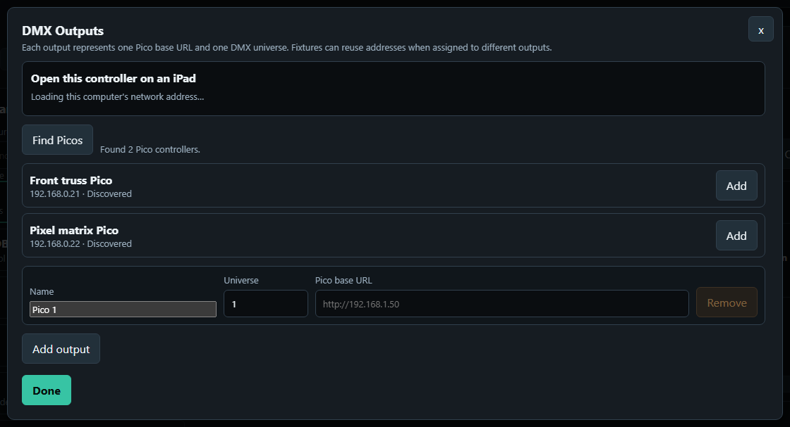
Open DMX Outputs in the Controller header when the show needs more than one 512-channel DMX universe. Each output has:
- A descriptive name, such as
Front truss PicoorPixel matrix Pico - A unique universe number
- One Pico base URL
- A stable discovered-device ID when it was added through network discovery
Click Find Picos to listen for every Pico WiFi DMX discovery beacon on the LAN. The result list shows every discovered controller with its advertised name and IP address. Click Add beside each Pico that belongs to the show. The first discovered Pico fills an unused empty output; additional devices receive the next free universe number. A Pico whose device ID or normalized URL already belongs to an output is marked Added and cannot be added again.
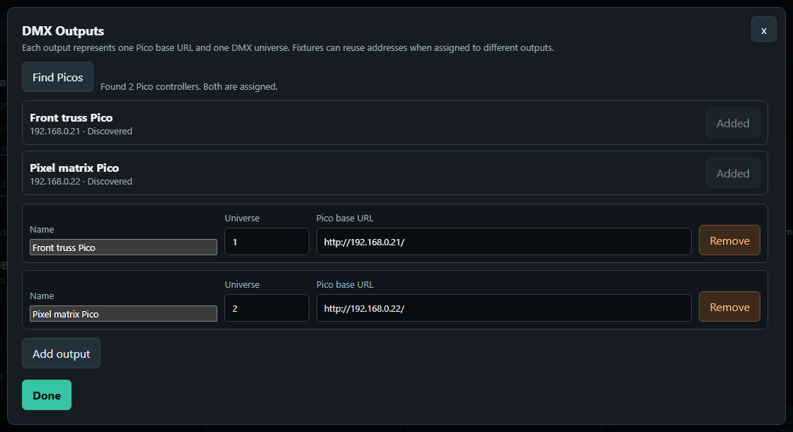
Names, universe numbers, and URLs remain editable after discovery. Click Add output for a controller that must be entered manually. Every output must have a unique universe number. Click Done to validate the list, refresh the shared header health immediately, and autosave the show.
Select the wanted DMX output while patching a fixture. Address conflicts are checked only inside that output, so Universe 1 channel 1 and Universe 2 channel 1 are independent and may both be used. Existing fixture cards in Patch Fixtures also have a DMX output dropdown. Reassigning a fixture is refused if its address range would overlap another fixture on the destination output.
The Controller routes single controls, fixture Default/Blackout/Highlight recalls, Group Edit, scenes, palettes, Fan Out, room-plane targeting, and clear-all operations to their fixtures' assigned outputs. Multi-fixture batches are separated by output and sent to the involved Picos concurrently. Patch CSV includes the output name and universe for every channel. Complete show export/import preserves the output definitions and fixture assignments; the current show format is version 5 so older controller software refuses unsupported multi-output and pixel-matrix data instead of silently losing it.
The other operating pages use the first output for Pico-specific operations that currently target one controller, such as autonomous Chaser/Effects slots, GPIO setup, Buffer Monitor, and Performance tests. Fixture DMX routing and Pixel Matrix output remain universe-aware and follow each fixture's assigned output.
Pixel Matrices
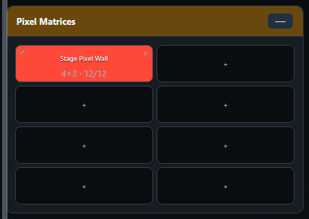
Use the Pixel Matrices toolbox on the Controller page to convert a still image into fixture colors. The toolbox can drive separate RGB-type fixtures, individual pixels inside a native RGB pixel matrix fixture control, or a mixture spread across multiple DMX outputs. Saved matrices use the same tile layout as Scenes and Palettes: click a filled tile to apply it to DMX, use its pencil to edit it, or use its x to delete it. Click an empty + tile to create a matrix in that position.
Enable Toolboxes Edit to reveal the Pixel Matrices Cols and Rows dropdowns and automatically enable tile movement. Drag a filled matrix to another slot on desktop, or tap its source and destination slots on a touch screen. Moving onto a filled slot swaps the two matrices; moving onto an empty slot leaves the other matrices unchanged. The layout and matrix positions autosave with the fixture setup.
Before creating the visual matrix:
- Add or import fixture profiles with RGB, RGBW, RGBWA, CMY, CMYK, or native RGB matrix controls.
- Patch every physical fixture to the correct DMX output, universe, and address.
- Arrange the compatible fixture color controls in the intended row-major order if you want to use Auto Map.
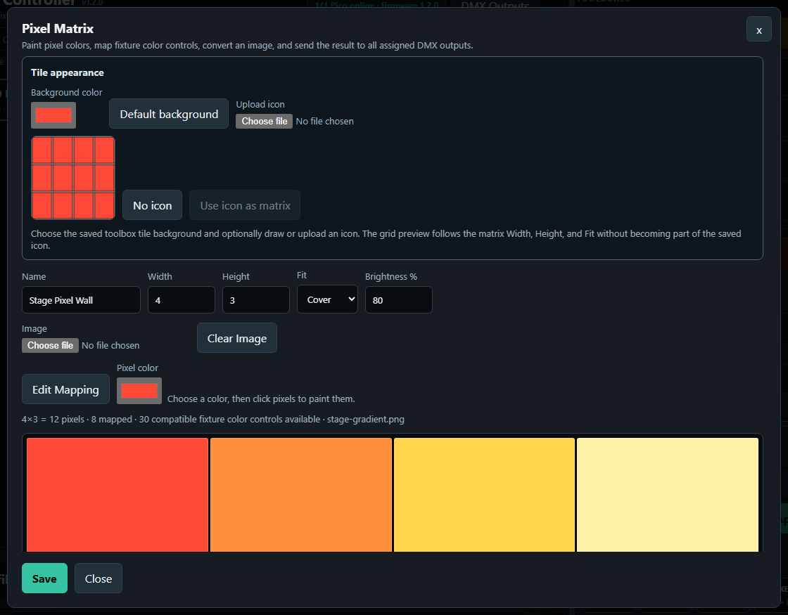
To create and test a matrix:
- Open Pixel Matrices and click an empty
+tile. - Enter a name and the logical Width and Height. Matrices may contain up to 64×64 pixels.
- Click Auto Map to assign the available compatible fixture controls from the top-left pixel across each row. If the physical order differs, select the first Mapping target and click its wanted pixel cell. The dropdown automatically advances to the next unused compatible fixture target, so continue clicking the physical pixel positions in sequence without reopening the dropdown each time. After the last available target it returns to Unmapped. Selecting the same target on another cell moves that target rather than duplicating it. Choose Unmapped and click a cell to clear only that assignment, or use Clear Mapping for the whole matrix.
- Choose Contain, Cover, or Stretch, set a brightness limit, and select a PNG, JPEG, WebP, or GIF image. Conversion happens locally in the browser; the saved show stores the resulting pixel colors and image filename, not the original image file.
- Click Apply to DMX to preview the converted image immediately. The Controller updates its live color values, separates the DMX bytes by assigned output, and sends the involved Pico batches concurrently.
- Click Save to add the definition to the toolbox and the normal 800 ms fixture-setup autosave. Saved matrices are included in Export Show and restored by Import Show.
Clear Image makes every logical pixel black without changing its mapping. Delete in the editor and the tile’s x both remove the selected saved matrix. The first implementation handles one converted still frame; animation and video playback are not yet included.
Fixture Library
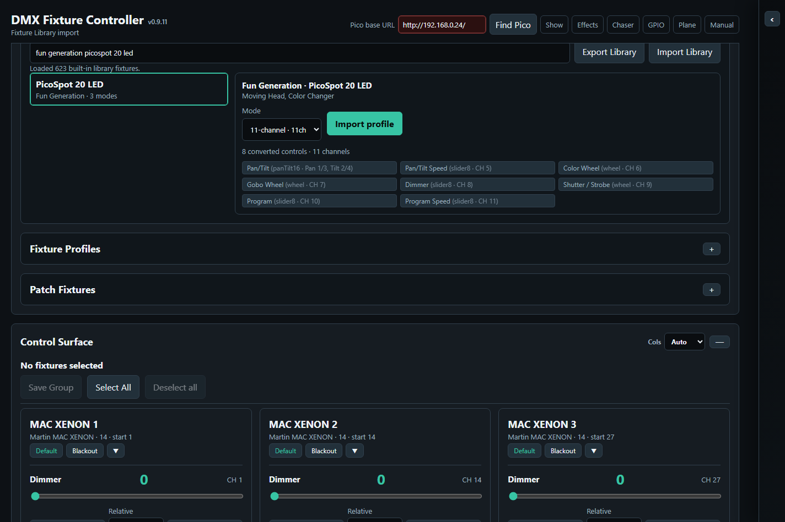
The Fixture Library panel imports fixture profiles from an export of the original Open Fixture Library project. Use it when you want to start from an existing fixture definition instead of building every channel by hand. Selecting a fixture shows Fixture Information when OFL provides it: authors, creation/update dates, dimensions, weight, power, DMX connector, light source, beam angle, and links to the OFL entry, manual, product page, or video. External information links open in a new tab and only HTTP/HTTPS links are accepted.
The library loads automatically when the controller page opens. While it is loading, the search field is disabled and the panel shows a loading status. If loading fails, the panel shows a Retry button.
Command buttons that save, import, export, or update setup data briefly show their result on the button itself. For example, Update Library changes to Comparing... while its merge dialog is open and then Updated when the chosen operation is complete.
Use Export Library to download the currently loaded fixture catalog as the compressed pico_dmx_fixture_library.zip; it contains pico_dmx_fixture_library.json. Use Import Library to upload that ZIP or an older uncompressed library JSON file to the XAMPP server. After import, the controller loads that custom library first; if no custom library is saved, it falls back to the built-in converted library asset. The development script scripts/sync_fixture_library_from_xampp.ps1 can refresh that bundled fallback from the current XAMPP catalog after validating the library schema, fixture count, and fixture keys. When fixtures differ, the script asks whether to take each XAMPP change or keep the bundled copy; -AcceptAllChanges, -KeepExistingChanges, and -DryRun are available for intentional automated runs.
Older custom catalogs may not contain Fixture Information, normalized capability data, or OFL wheel-resource links yet. In that case, the Controller overlays matching information from the built-in fixture-metadata.json, fixture-capabilities.json, and fixture-resources.json sidecars in browser memory. The resource sidecar stores each offline SVG/PNG once and maps it to matching fixture wheel slots. This does not save, replace, or otherwise modify the custom catalog on the XAMPP server.
- Type part of the manufacturer, fixture name, category, or mode in Search manufacturer or fixture.
- Select the matching fixture from the results list.
- Choose the desired DMX mode from the Mode dropdown.
- Review the converted controls and channel count in the preview.
- Click Import profile.
The imported fixture is added to Fixture Profiles and becomes the active profile. You can edit it like any manually created profile, including changing labels, defaults, blackout values, and wheel options. The imported profile remembers its library fixture key and mode, so later updates still find the correct reusable definition if you rename the show profile.
The converter keeps the richer Open Fixture Library data where the controller can use it:
- Pan/tilt channels are grouped as 8-bit or 16-bit pan/tilt controls when matching channels are present.
- Scalar coarse/fine pairs such as dimmer, focus, zoom, iris, and color temperature become one 16-bit control instead of separate coarse and fine sliders.
- RGB, RGBW, and RGBWA color intensity channels are grouped into color controls.
- Explicit OFL defaults are imported and scaled to the actual 8-bit or 16-bit control resolution.
- Compatible rectangular matrices using sequential RGB channels per pixel become native RGB matrix controls. Unsupported arrangements are left uncollapsed rather than mapped incorrectly.
- Wheel slots keep their OFL names, colors, and offline SVG/PNG images when the library provides them.
- Wheel DMX ranges are preserved. Normal slot buttons send the midpoint of the range.
- Adjustable wheel functions such as
WheelShake,WheelRotation, andWheelSlotRotationshow a bounded speed/range slider after you select that option. - Segmented shutter/strobe, program, effect, prism, and maintenance channels become named option controls. Their buttons send a value safely inside the selected DMX range.
- Continuous capabilities retain their DMX range and speed information so the UI can provide a bounded control where the capability supports it.
- Explicit OFL highlight values enable a temporary Highlight / Restore action on the patched fixture card.
- Unsupported or ambiguous channels are kept as simple 8-bit sliders so no channel is silently lost.
Create a Fixture Profile

A fixture profile describes the DMX personality of one fixture type. Use this section when the wanted fixture is not available in the Fixture Library, or when you want to fine-tune an imported profile.
- Open Fixture Profiles.
- Enter a profile name, mode name, and channel count. These fields update the selected profile automatically.
- Click Add profile.
- Select the profile.
- In Add / Edit Control, choose the control type, label, and channel mapping.
- Click Configure control to open the control details modal, then set default/blackout values and type-specific options.
- Click Add control or Save control in the modal.
Each control stores its own DMX channel mapping. For example, a moving head can have:
- Dimmer on channel 1
- Pan/Tilt 16-bit on channels 2/3 and 4/5
- RGBWA color on channels 6-10
- Gobo wheel on channel 12
Simple 8-bit and 16-bit sliders only need channel mapping plus optional Default and Blackout values in the modal. Color controls add a color picker and any extra white, amber, or key channels. Wheel / indexed controls add the wheel editor and guided wheel editor so DMX ranges, colors, icons, and OFL-style function metadata can be entered without writing the raw text by hand.
Pan/Tilt controls also have fixture-profile mapping options in the control details modal:
- Reverse Pan DMX sends the logical Pan value as
max - value. - Reverse Tilt DMX sends the logical Tilt value as
max - value. - Swap Pan/Tilt axes sends logical Pan through the fixture's Tilt channels and logical Tilt through the fixture's Pan channels.
These options belong to the fixture profile, so every patched fixture using that profile follows the same mapping. The controller, chaser, and browser effect output keep showing logical Pan/Tilt values; only the physical DMX bytes are changed. This means scenes, palettes, chases, and effect centers remain readable even when a fixture is mounted backwards or rotated.
To change an existing control, click Edit in the Fixture Profiles list. The compact Add / Edit Control fields load the selected type, label, and channels, and the control details modal opens automatically. After editing, click Save control in the modal. If a Pico base URL is set, saving an existing control immediately resends the current live value for every patched fixture using that profile/control, so Pan/Tilt reverse or axis-swap changes are applied to the output right away. The Fixture Profiles collapse button hides the profile list and the compact Add / Edit Control box together.
Click Update Library to compare the selected show profile with its linked reusable fixture mode. The Merge Fixture Profile dialog shows both names, modes, channel counts, control counts, and a short difference summary. Choose Use show in library to update the reusable mode from the show, or choose Use library in show to refresh the existing show profile without adding a duplicate profile. A profile that has no library match can only be added with Use show in library.
The merge keeps data that belongs to only one side. Fixture Information, OFL capabilities, warnings, categories, unrelated modes, and richer wheel details remain in the library. Show profile/control IDs and Pan/Tilt reverse or axis-swap settings remain in the show because they describe patch references and how fixtures are mounted in this show. When Use show in library is selected, matching reusable controls retain their library IDs and metadata while editable names, channel mappings, defaults, and blackout values come from the show.
Default and Blackout Values
Each control can store a Default value and a Blackout value.
Default values are useful for a normal starting look, for example:
- Dimmer open
- Pan/Tilt centered
- RGB white
- Gobo open
Blackout values are useful for quickly shutting down output, for example:
- Dimmer 0
- RGB black
- White and amber 0
- Pan/Tilt at a safe position if needed
For RGB, RGBW, and RGBWA controls, use the color picker for RGB. White and amber channels are edited separately when the fixture type has them.
Patch Fixtures
Patch fixtures after the profile is ready.
- Open Patch Fixtures.
- Enter a fixture name.
- Select the fixture profile.
- Select the DMX output that physically drives the fixture.
- Enter the DMX start address within that output's 512-channel universe.
- Set Count to the number of fixtures you want to patch.
- Click Patch fixture.
Use Next free to find the next available address on the selected output. The same address can be used on another output.
When Count is greater than 1, the controller creates a numbered run of fixtures. For example, name RGB Spot with count 10 creates RGB Spot 1 through RGB Spot 10. The first fixture uses the start address you entered. The following fixtures are spaced by the channel count of the selected fixture profile.
After a multi-fixture patch, the controller asks whether to create a Saved Group for the newly patched fixtures. The suggested group name is the patch name. Press Cancel to skip group creation, or enter a name to save the new fixtures as a group.
The patched fixture list is shown as rows of compact cards. Each card shows its output, universe, profile, and channel range and provides a DMX output dropdown for repatching the fixture to another Pico. The controller checks the destination universe for an overlapping address range before accepting the move. Each row represents one consecutive run of the same fixture profile, so separate patch runs remain visually separate even when they use the same profile.
Live Fixture Control

The Control Surface shows one card per patched fixture.
Each fixture card contains the controls from its profile:
- Sliders for dimmer and simple channels
- XY pads for absolute pan/tilt positioning
- Relative pan/tilt nudge controls for small position corrections
- Color pickers and swatches for color controls
- Wheel buttons, a DMX value slider, and a direct numeric DMX value field for indexed wheel values
- Coarse/fine relative nudges for 16-bit channels
For pan/tilt controls, drag inside the XY pad when you want to move directly to an absolute position. Use Pan coarse relative, Pan fine relative, Tilt coarse relative, and Tilt fine relative when you want to adjust from the current position without jumping to a new absolute value. The number field in each relative row sets how many DMX increments the next - or + click will move. The fine relative buttons move the combined 16-bit value by that many steps, including byte borrow and carry: for example 256 - 1 becomes coarse 0, fine 255, and 255 + 1 becomes coarse 1, fine 0. The value is clamped at the valid DMX range, so it cannot go below 0 or above 65535. If the fixture profile reverses or swaps Pan/Tilt, the XY pad and relative controls still show logical Pan/Tilt movement while the DMX output is mapped for the physical fixture.
Wheel / indexed controls require unique DMX option values. If two wheel options use the same DMX value, the control details modal refuses to save the control. This prevents ambiguous wheel buttons where the UI could not know which option should be highlighted after recall or chase editing. On the Controller page and in Controller Group Edit, wheel controls can be changed with the option buttons, the DMX value slider, or the direct numeric DMX value field.
Use Guided wheel editor when creating or correcting indexed controls such as color wheels, gobo wheels, and shutter/strobe ranges. The guided table is the normal place to edit wheel rows, including option name, DMX range start/end, function type, slot number, speed labels, background color, uploaded icon, or drawn icon. A wheel option button can show a color swatch, an icon, or an icon on top of the chosen color. This is the recommended way to define rich functions such as WheelShake, WheelRotation, and ShutterStrobe without memorizing the raw text syntax.
The Wheel options text box remains editable for advanced use and accepts one option per line. Basic lines use Name=DMX or Name=start-end, for example Open=0-15. Richer OFL-style metadata can be added after pipe characters. Use kind=WheelSlot with slot=2 for a named slot, kind=WheelShake with shake=slow-fast for a bounded shake speed range, kind=WheelRotation with speed=slow CW-fast CW for a bounded rotation range, and kind=ShutterStrobe with speed=slow-fast for a bounded strobe range. For example: Gobo 2 shake=125-140|kind=WheelShake|slot=2|shake=slow-fast.
Fixture profiles imported from the Fixture Library keep richer Open Fixture Library wheel information when it is available. Wheel slots use their real names and colors, for example White, Red, or Gobo 2. If an OFL wheel option covers a DMX range, the button sends the middle of that range so the value is safely inside the fixture function. Adjustable wheel ranges such as WheelShake, WheelRotation, WheelSlotRotation, and ShutterStrobe also show a bounded range slider after you select them. For example, the Fun Generation PicoSpot 20 LED in 11-channel mode imports Gobo 2 shake as a wheel button and shows a Shake speed slider limited to its real DMX range.
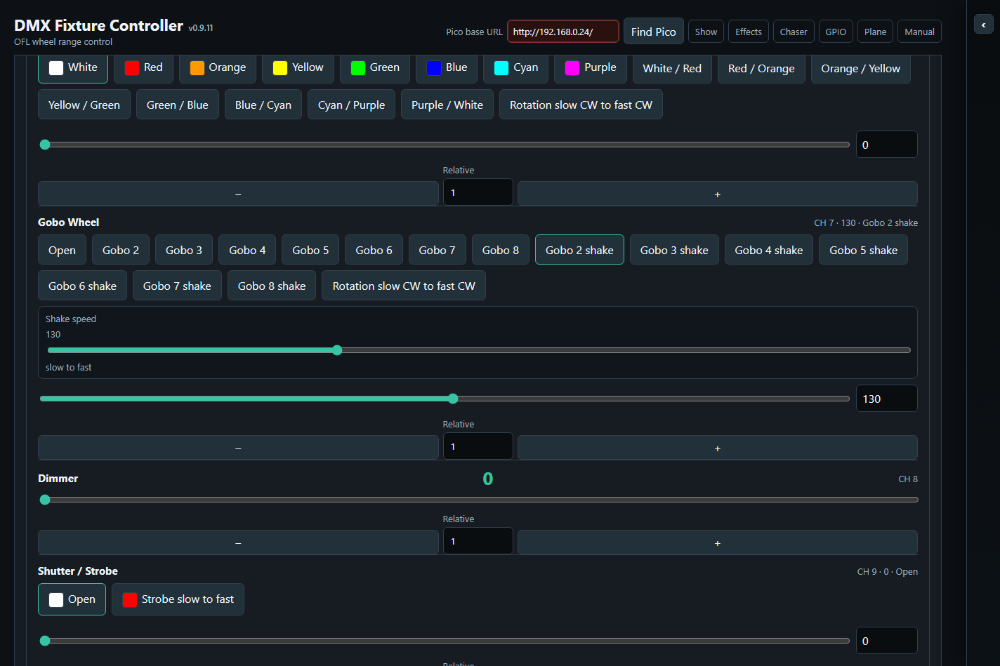
Use Default or Blackout on a fixture card to recall the stored values for that fixture only. A fixture-card recall takes manual control of the DMX output: it stops Pico Chaser and Pico Motion playback first, then sends the configured values so active playback cannot immediately overwrite the recalled look.
If an imported OFL profile provides explicit highlight values, its fixture card also shows Highlight. Click it to stop Pico playback, remember the current look, and send only the declared highlight values for fixture identification or focusing. The same button changes to Restore. The temporary highlight is not autosaved; click Restore to send back the exact remembered values and return to normal editing.
Use Cols in the Control Surface header to choose Auto or a preferred count from 1 to 4. Auto keeps the spacious responsive card width. A fixed preference can show three or four fixtures across on a wide desktop, but the Controller automatically reduces the effective count when the Toolboxes rail, available viewport width, or iPad layout would make sliders, buttons, readouts, or XY pads too narrow. The saved preference is stored in server UI state and is included in complete setup export/import.
Use the small button in the Control Surface header to collapse all visible fixture cards or expand them again. The button affects only the fixtures currently shown by the active group, scene, or palette filter.
Click a fixture card header or empty card area to include or exclude that fixture for group editing. The selected card uses the same accent outline style as other selectable tiles in the app. Clicking sliders, color controls, wheel buttons, Highlight/Restore, Default, Blackout, or collapse controls does not change fixture selection.
After a hard page reload, no fixture cards are selected automatically. This keeps Group Edit disabled until you deliberately choose the fixtures you want to edit.
Use Select All in the group bar above the control surface when you want to select every patched fixture. Use Deselect all to clear the current manual selection. When you manually select fixture cards, the control surface stays visible so you can keep building or adjusting the selection. Saved Groups can also be selected from the Groups toolbox to filter the control surface.
Fixture Controller Toolboxes
The Fixture Controller uses the shared right-side Toolboxes sidebar.
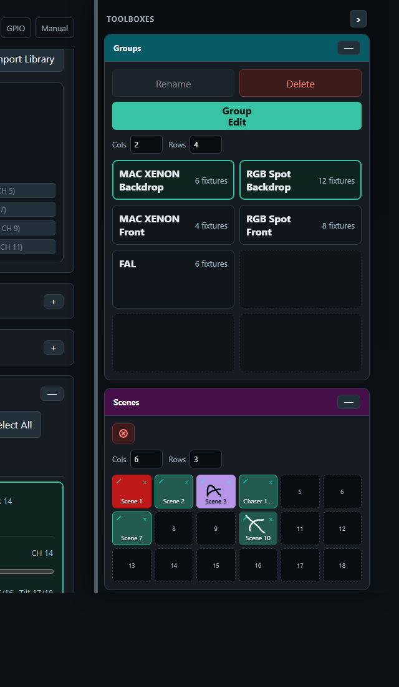
Show is the first Controller card and the project-level home for show setup. Edit the Show name field directly; changes use the normal 800 ms server autosave. Its top action bar displays Export Show, Import Show, Export Library, and Import Library together; the nested Fixture Library, Fixture Profiles, and Patch Fixtures cards follow below. Collapse Show to hide all of those setup tools at once. When Show is expanded again, each nested card returns with its own previous expanded or collapsed state. New Show confirms the reset and then asks for the required show name before clearing fixtures, live values, groups, scenes, palettes, chases, effects, saved room planes, GPIO mappings, Pico playback slots, Show Run layout, and saved toolbox layout while keeping the reusable fixture library. Export Show and Import Show handle the show backup; Export Library and Import Library independently handle the complete reusable catalog. Patch CSV exports the patched channel table.
Groups stores fixture groups and shares the selected group filter with other toolbox pages. Use it to select fixtures quickly, edit group tile names and visuals from the small pencil icon, delete groups from the small x, import/export group JSON, reorder group tiles with Move, and open Group Edit when the current scope supports it.
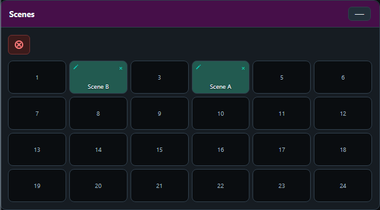
Scenes stores complete looks for the current working scope. Empty slots save, filled slots recall, the small x deletes, Move reorders tiles, and the small top-left pencil icon opens Edit Tile for that slot's name, background, and optional drawing/upload.
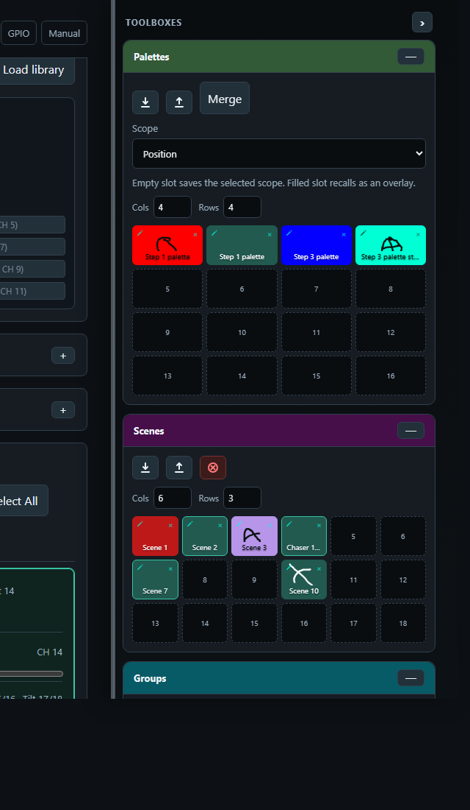
Palettes stores reusable value fragments such as positions, colors, gobos, dimmer looks, or Fan Out results. Palette recall applies only the stored controls and leaves unrelated values untouched. Move reorders palette tiles without recalling them.
Planes recalls room planes saved on the Room Plane page. Clicking a filled Plane tile opens the virtual room target modal and immediately recalls the Plane's fixture scope: every fixture saved in the Plane that still exists in the current Controller patch becomes selected, while an unrelated saved-group selection is cleared. Fixtures saved in the Plane but no longer patched are ignored. The modal applies the saved target's calibrated Pan/Tilt values to that recalled selection and sends them live when a Pico base URL is configured. Drag or click the red target, use the X/Y coarse and fine nudge controls, or pinch with two fingers to zoom the plot without moving the target. Closing the modal does not change the saved Plane definition.
Toolboxes Edit automatically enables tile movement in Groups, Scenes, Palettes, and Planes while showing their Cols and Rows layout dropdowns. Tap either dropdown to choose the matrix size with the native iPad picker. Drag a filled tile to a new position. While dragging, the source tile gets the same accent outline used when moving toolboxes, and the target position shows an accent insertion line. On touch screens, tap the filled source tile and then tap the destination. Dropping onto an empty slot moves the tile there; dropping onto another filled tile swaps the two slots. Click Done to return the tiles to their normal recall/use behavior. Groups use the same tile-slot behavior as Scenes and Palettes; the fixture order stored inside a group is not changed by moving the group tile.
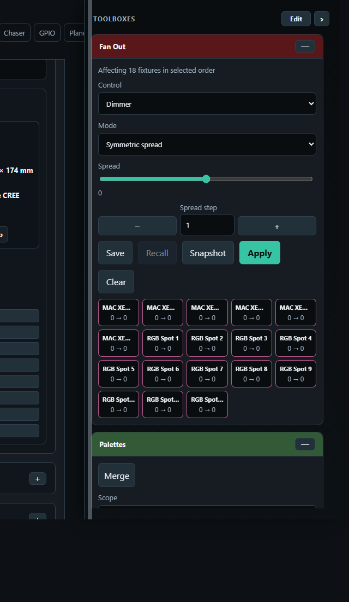
Fan Out shapes the currently selected fixtures or groups by spreading one compatible control through the selected order. It is documented in more detail below because its output can be saved as scenes or palettes.
Fan Out Toolbox
The Fixture Controller includes a Fan Out toolbox in the shared Toolboxes sidebar. It shapes the current controller values for the selected group or selected fixture cards, so the result can immediately be saved as a scene.
- Select one or more Saved Groups, or select fixture cards manually.
- In Fan Out, choose the control to shape, for example Dimmer, Pan, Tilt, or another compatible single-value control.
- Click Snapshot to use the current controller values as the fan base.
- Adjust Spread, or use Start to end mode with From/To offsets.
- In Symmetric spread mode,
0is the center of the slider. Positive and negative Spread values run the same shape in opposite directions through the selected fixture order. - The Control Surface updates continuously while you change the fan values.
- The affected fixture controls are highlighted in the Control Surface.
- Save the resulting look with the Scene Toolbox if you want to keep the actual DMX look.
In Symmetric spread mode, the Spread slider is centered at 0 and can move into positive or negative values. Positive Spread sends the fan in one direction through the selected fixture order; negative Spread sends it in the opposite direction. The Spread step field and the - / + buttons provide fine adjustment of the signed Spread value. Set the step size to the number of DMX increments you want to add or subtract, then click - or +. The buttons clamp at the valid signed range for the selected Fan Out control. Start to end mode hides the Spread nudge row because that mode is edited directly with the From and To number fields.
The current Fan Out working state is autosaved to the XAMPP server UI-state file. This includes the selected Fan Out control, mode, signed Spread, From/To offsets, and Spread step size, so the toolbox can restore the last working shape after a reload. Saved Fan Out presets are separate: use Save when you want to keep a named Fan Out recipe for later recall.
The Fan Out toolbox only shows controls that are available on every fixture in the selected set. For pan/tilt controls, Pan and Tilt appear as separate fan targets. Applying a fan writes the calculated values into the controller just like moving the controls by hand. When a Pico base URL is set, the changed DMX values are also sent to the Pico.
Fan Out calculates from a stored base value for each fixture, control, and axis. Snapshot stores those base values. In Symmetric spread, the spread is added around the base values:
final value = snapshotted base value + spread offsetFor example, with five fixtures and a spread of 100, the offsets are -50, -25, 0, +25, and +50. If every fixture has a base value of 128, the result is 78, 103, 128, 153, and 178. With a spread of -100, the same offsets run in the opposite direction. If the fixtures have different base values, each fixture still keeps its own base as the starting point.
The offset is assigned by fixture position in the current Fan Out order:
fixture position = 0 ... fixture count - 1
offset position = fixture position / (fixture count - 1)In Symmetric spread, the first fixture receives -spread / 2, the last fixture receives +spread / 2, and fixtures between them are spaced evenly. In Start to end mode, the first fixture receives the From offset, the last fixture receives the To offset, and fixtures between them are spaced evenly.
Fan Out order is important:
- If one or more saved groups are selected, the Controller uses the fixture order stored inside those groups. When several groups are selected, the groups are read in selected group order and duplicate fixtures are skipped after their first appearance.
- If no saved group is selected, the Controller uses the manual fixture selection order from the Control Surface.
- Negative Spread reverses the symmetric fan direction. It does not change the saved group, patch order, or fixture selection.
For a physical left-to-right fan, the saved group fixture order must match the physical fixture order. If a group was saved in a different order, the Fan Out math is still correct, but the visible stage result can look crossed or random.
Use Save in the Fan Out toolbox to store the fan setup itself: selected group or fixture IDs, selected control, mode, spread, and From/To offsets. Use Recall to restore that fan setup later. Recalling a Fan Out preset reapplies the fan to the controller values; it does not create a scene by itself. Use the Scene Toolbox when you want to store the resulting lighting look.
Palette Toolbox
The Fixture Controller also includes a Palettes toolbox. Palettes are reusable value fragments, while scenes are complete looks for their saved scope.
Use palettes for building blocks such as:
- Positions
- Colors
- Gobos
- Dimmer levels
- Fan Out results that you want to reuse as an overlay
The small top-left pencil icon on a filled palette slot opens Edit Tile for that slot. Use Name to rename the tile text, and use the visual controls for a background color plus an optional drawn/uploaded visual on top. The visual is independent from the palette scope. The drawing canvas uses the selected background color, and the brush automatically switches between a light and dark stroke for readable contrast. Use Default background to restore the standard slot color, or No icon to keep only the colored button. Scope still decides which DMX values are saved; the name and visual are readable labels shown in the palette slot grid and stored inside the palette JSON.
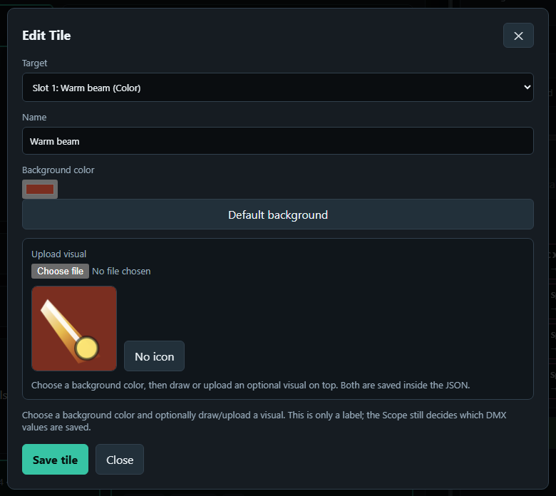
Palette save rules:
- If Fan Out is active, the palette saves only the Fan Out affected controls.
- If Fan Out is not active and fixtures are selected, the palette saves only the selected Scope for those fixtures.
- Position saves pan/tilt or position controls.
- Color saves RGB, RGBW, RGBWA, CMY, CMYK, matrix RGB, and common fixture-library color channels such as red, green, blue, cyan, magenta, yellow, white, amber, UV, lime, hue, saturation, CCT, CTO, or tint.
- Dimmer saves controls labeled as dimmer, dimming, or intensity.
- Shutter / Strobe saves shutter, strobe, and flash controls.
- Gobo saves gobo wheels and gobo rotation/index controls.
- Prism saves prism and prism rotation controls.
- Optics saves focus, zoom, iris, frost, beam, diffuser, or lens controls.
- Programs / Effects saves program, macro, effect, auto show, chase, pattern, scene, or preset controls.
- All controls saves every control on the selected fixtures and should be used deliberately.
- If nothing is selected, the palette is not saved; select fixtures or apply Fan Out first.
When saving a Gobo palette, the Controller can fill the palette tile visual from the selected fixture's gobo wheel metadata. If all selected fixtures resolve to the same gobo image or color, that shared visual is used automatically. If selected fixtures use different gobos, the current source fixture supplies the tile visual. If no gobo visual metadata exists, the palette uses the normal default visual.
Palette recall rules:
- Recalling a palette applies only the stored values.
- Unrelated controller values are left unchanged.
- The active group filter is cleared.
- The Control Surface is filtered to the fixtures involved in the palette.
- When a Pico base URL is set, only the recalled palette controls are sent to the Pico.
Filled palette slots recall palettes. Merging is done with the separate Merge button so recall and edit actions stay distinct.
Use Merge when you have a current fixture selection or active Fan Out result:
- The controller opens a palette matrix picker, so you choose the saved palette tile visually instead of typing a slot number.
- Empty slots are shown for orientation but cannot be selected as merge targets.
- If the current scope matches the saved palette scope, the values are merged and the palette keeps its scope.
- This allows one Color palette to contain RGB controls, color wheels, and RGBWA controls from different fixture types while still remaining a Color palette.
- If the current scope differs from the saved palette scope, the controller asks whether to change the saved palette to All controls and merge.
- If you cancel a merge prompt, the palette is not changed.
Use Move when you want to reorder palette tiles. The same interaction is also available in the Groups and Scenes toolboxes:
- Click Move to enable palette move mode.
- Drag a filled palette tile to an empty slot to move it there; the tile shows the same drag outline and insertion marker used for moving toolboxes.
- Drag a filled palette tile onto another filled palette tile to swap their positions.
- On touch screens, tap a filled tile to select it, then tap the destination slot.
- While Move is active, clicking a palette tile does not recall or save it.
- Click Move again when you are done organizing the palette grid.
2. Scenes And Palettes
The Scene Toolbox is available on the Fixture Controller page.
Use scenes to store fixture/control looks. A scene stores controller values by fixture/control key, not a raw 512-channel DMX dump.
The small top-left pencil icon on a filled scene slot opens the same Edit Tile modal used by palettes. A scene can be renamed and can have a background color plus an optional drawn/uploaded visual in its slot. The canvas background follows the selected background color, and the brush color is calculated for contrast against it. Default background restores the standard slot color, and No icon removes the drawn/uploaded image. This name and visual are only labels for finding the scene quickly; scene save and recall still use the stored fixture values.
- Set your desired fixture values.
- Click an empty scene slot.
- Enter a scene name.
- Click a filled slot once to recall it.
- Use the small
xon a filled slot to delete it.
Scene Save Rules
Scene saving uses the current working scope:
- If Fan Out is active, the scene saves only the fixtures affected by Fan Out.
- For each Fan Out fixture, the scene saves all controls of that fixture, not only the fanned control. This keeps related values such as Tilt stable when saving a Pan fan.
- If Fan Out is not active and fixtures are selected, the scene saves only the selected fixtures.
- Selected Saved Groups count as selected fixtures, so a group-filtered scene saves only the fixtures in the selected groups.
- If a scene was recalled and the control surface is filtered to that scene's involved fixtures, saving again uses those involved fixtures.
- If nothing is selected, the controller asks before saving all patched fixtures.
- If you cancel that prompt, no scene is saved.
This means a scene is normally scoped to the fixtures you are actually working with. It does not silently save unrelated fixtures unless you explicitly confirm the all-fixtures fallback.
Scene Recall Rules
Scene recall loads the stored values back into the Fixture Controller, redraws the fixture cards, and updates the live-value snapshot used by the Chaser page.
When the applicable DMX Output is configured, scene recall also sends the recalled DMX values to the Pico in one batch. Disconnect or disable the hardware output before recalling looks that must remain browser-only.
Recalling a scene clears the active group selection and shared group filter. It then selects the fixtures involved in the recalled scene and filters the Control Surface to only those fixtures. This makes the recalled scene visible without leaving an old group filter active, and without showing unrelated fixtures.
If a saved scene was created before fixtures were repatched, the controller tries to remap old fixture IDs to the current patch by matching the same fixture profile in DMX start-address order. This lets older scenes continue to recall after a fixture run was recreated, as long as the fixture profiles and control IDs still match.
The red Clear all DMX channels button clears controller values. When a Pico base URL is set, it also calls /dmx/clear on the Pico. This clears both live DMX output and the motion base buffer.
The Scene Toolbox sits in the shared Toolboxes sidebar. Its slot grid follows the configured rows and columns, and the tile size expands to the available sidebar width while keeping the old minimum slot size.
3. Groups

Groups let you control multiple fixtures at once.
Create a Group
- Select two or more fixture cards.
- Click Save Group.
- Enter a group name.
- The group appears in Saved Groups.
Saved Group Selection

The Saved Groups card shows groups in a compact matrix. Each group has four actions:
- Select adds the group to the active group filter.
- Deselect removes only that group from the active filter.
- The small pencil on a group tile opens Edit Tile for that saved group's name, background color, and optional drawn/uploaded visual.
- The small
xon a group tile removes that saved group after confirmation.
More than one saved group can be selected at the same time. The control surface shows the union of all fixtures from the selected groups. This makes it possible to work with several fixture groups together without editing the group definitions.
The group bar above the control surface shows how many fixtures are selected and which saved groups are active. Use Select All to select every patched fixture explicitly. Use Deselect all to clear a manual fixture selection. When a saved-group filter is active, the same button is shown as Show all and clears the saved-group filter to return to the full fixture list.
Group selection is shared across toolbox pages that use the Groups toolbox. It is a working filter: selecting groups limits the visible fixtures for controller editing, Fan Out targeting, and Chaser participating-control setup. Recalling a scene, editing a saved chase step, or loading a saved chase clears the group filter because the recalled data itself becomes the source of truth.
Edit a Group
- Load a saved group or select multiple fixtures.
- Click Group Edit.
- Adjust common controls in the modal.
On the Fixture Controller, Group Edit lives in the Groups toolbox. It requires an explicit fixture selection. If nothing is selected, Group Edit is disabled. Select individual fixture cards, load one or more saved groups, or press Select All before opening Group Edit from the Groups toolbox.
The Group Edit modal shows controls that exist in the current edit scope. It can be used for one fixture or many fixtures where the page supports single-fixture editing. Mixed fixture types are allowed; each control is applied only to fixtures that actually have a matching control, so incompatible fixtures are ignored for that control.
The selected Source fixture is the template for the modal values. When you open Group Edit, the modal reads the Source fixture's current matching control values and shows those values in the sliders, wheel buttons, color controls, XY pads, and relative nudge controls. Opening the modal does not overwrite the other selected fixtures and does not send DMX by itself.
The source selection is automatic. Loading a saved group makes the first fixture stored in that group the Source. With manual fixture selection, the clicked/selected fixture becomes the Source; if that fixture is removed from the selection, the page picks the next selected fixture that can provide the control.
The values are applied when you actually edit a control in the modal. Moving a slider, typing a direct numeric DMX value, dragging an XY pad, choosing a wheel slot, changing a color, pressing Center, using relative nudges, or using Default/Blackout writes the change to every selected fixture that has the matching control. Absolute edits write the shown Source value to the matching fixtures. Relative nudges keep each selected fixture relative to its own current value, so a group pan/tilt nudge moves the selected fixtures together without forcing them all to the same absolute position. When the applicable DMX Output is configured, each Group Edit change is sent to the Pico immediately. Disconnect or disable the hardware output before edits that must remain browser-only.
Group Edit remembers the relative step-size fields you set, for example Pan fine relative or Tilt fine relative. Controller, Show Run, Chaser, Effects, and Room Plane use the same autosave behavior. Each page stores its own step sizes in the XAMPP server UI-state file and restores them the next time Group Edit or the page opens, so your preferred nudge sizes survive reloads without forcing every workflow to use the same values.
If the controller is currently scoped by a recalled scene, recalled palette, or Fan Out result, Group Edit uses that scope. In that case it shows only controls that are part of the active scope and exist in the selected fixture scope. Editing a scoped control writes only to matching fixtures.
Use Default or Blackout to recall the stored default or blackout values for every fixture in the selected group.
Group Edit Contract
Controller, Chaser, and Effects all use the same basic Group Edit idea: the modal is available when the current page scope contains at least one editable control. Controller and Effects can use the same modal for a single fixture or a group of fixtures; Chaser uses the current participating-control scope for step editing. The fixtures do not need to use the same fixture profile.
Keep these rules as the contract:
- Mixed fixture types are allowed.
- A control is editable only when the page can match it by control identity, such as type and label.
- Wheel / indexed controls are stricter: same-named wheels are kept separate when their option lists differ, so a MAC Gobo wheel and a Scanner Gobo wheel are not accidentally edited as one control.
- The modal shows the matching fixture/profile scope for each control.
- Opening the modal reads the Source fixture values into the modal but does not apply or send anything yet.
- Editing a control writes only to fixtures that actually have the matching control.
- The first edit in the modal is the moment the value is written to the group; on pages with live output, that edit is also sent to the Pico when a Pico base URL is set.
- Incompatible fixtures remain selected but are ignored for that specific control.
- Group selection is a filter. If groups are selected, Group Edit uses only compatible fixtures inside those groups.
- Direct scope changes, such as Select All, Participating Controls All, or Effects All, clear the saved-group filter and make the page scope the source of truth.
4. Show Run
The Show Run page is the operator page. Use it when the show has already been prepared on the Fixture Controller, Chaser, and Effects pages and you want fewer editing controls on screen.
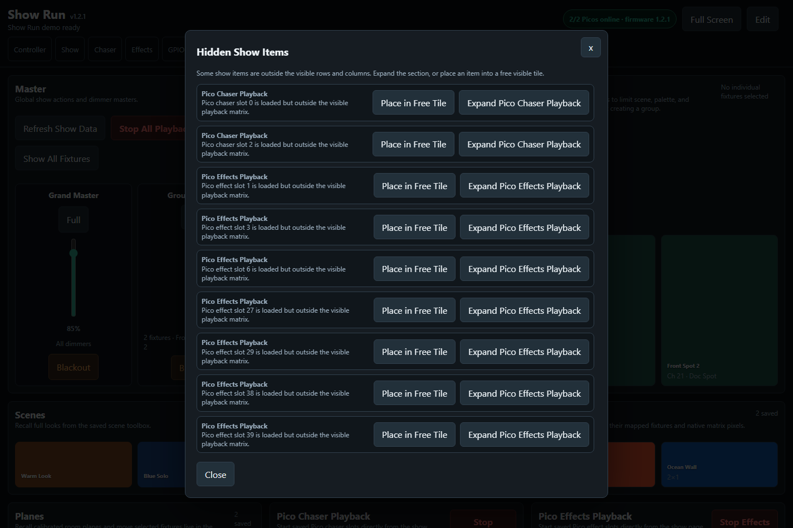
Open it from the Show navigation link or directly:
http://localhost/dmx/dmx_show.htmlOn supported PC and iPad browsers, use Full Screen in the sticky header to give the operator controls the maximum available screen area. The same button changes to Exit Full Screen while active. Browsers require this action to start from a direct click or tap. The button is hidden when the browser does not provide a page fullscreen API; you can still use an installed Home Screen web app or the browser's own display controls in that case.
Run Show Run as an iPad web app
The iPad Fullscreen API displays a system message and allows a downward swipe to exit fullscreen. For show operation without that fullscreen prompt, install the Show Run page on the iPad Home Screen and open it as a web app:
- Open Safari on the iPad and load the Show Run page, for example
http://192.168.0.12/dmx/dmx_show.html. - Tap Share, tap More if necessary, then tap Add to Home Screen.
- Enable Open as Web App.
- Tap Add.
- Return to the Home Screen and open Show Run using the new icon instead of opening it from a Safari tab.
The Home Screen version uses an app-like window without Safari's normal toolbar. Do not tap the page's Full Screen button in this mode; the installed web-app window is the intended iPad display mode and does not need the browser Fullscreen API.
If you prefer the Home Screen app to open on the Fixture Controller, open http://192.168.0.12/dmx/ before using Add to Home Screen. The installed app is named DMX Controller and uses the blue XAMPP icon; open Show from its navigation when you are ready to operate the show. If an older Home Screen icon still says DMX Fixture Controller Prototype or shows a page-preview tile, remove that icon and add the Controller page again so iPadOS reads the new name and icon metadata.
To prevent an operator from accidentally leaving the Show Run web app, you can additionally use iPad Guided Access:
- Open Settings > Accessibility > Guided Access, turn it on, and configure Passcode Settings.
- Open Show Run from its Home Screen icon.
- Triple-click the iPad top button, or the Home button on an older iPad, and select Guided Access if the accessibility menu appears.
- Review the session settings and tap Start.
- To leave later, triple-click the same button, authenticate with the Guided Access passcode, Face ID, or Touch ID, then tap End.
Show Run loads the current XAMPP show data:
- Fixture profiles and patched fixtures from
fixture_setup.php - Saved groups from
group_setup.php - Saved scenes from
scene_setup.php - Saved palettes from
palette_setup.php - Saved room planes from
room_plane_setup.php - Mirrored Pico chaser slots from
chaser_setup.php?slots - Mirrored Pico effect slots from
motion_setup.php?slots - Current live values from
fixture_setup.php?livevalues
Show Run automatically refreshes this show data when the page becomes active again, for example after switching back from the Controller, Chaser, or Effects page. This keeps the operator page current without needing to reload the browser tab. Automatic refresh is skipped while Edit is active so card moves, tile moves, Live Controls edits, and MIDI mapping edits are not overwritten. Use Refresh Show Data only when you want to force the same reload manually.
Master Card
The Master card contains the global operator actions and dimmer masters. Refresh Show Data reloads the current XAMPP show files manually. Stop All Playback stops Pico chaser and effect playback. Show All Fixtures clears the current group and fixture target filter.
The Grand Master is a vertical fader. It does not overwrite stored live values; it multiplies dimmer output by a 0..1 factor, including 16-bit dimmer controls. Blackout below the Grand Master sets the Grand Master fader to 0% and sends the scaled dimmer output immediately. Group Master faders work the same way, but only for fixtures assigned to that group master. The Blackout button below each Group Master sets only that Group Master to 0%. When a master is below 100%, Show Run also locks the affected dimmer channels on the Pico so running Pico chaser/effect playback cannot overwrite the master-limited dimmer output.
To assign a Group Master, first select one or more groups or fixtures, click Edit, then click Assign on the desired group master fader. Add Group Master, Assign, Clear, and the small tile x for deleting a Group Master are only available while Edit is active. Deleting a Group Master removes that fader and saves the updated master layout to server UI state. The Grand Master is protected and never has a delete x. The Grand Master factor and Group Master assignments are saved to server UI state and restored on page load. The pencil at the upper-left of the Grand Master or a Group Master opens its MIDI mapping editor; use Learn and move a hardware fader or knob to assign it.
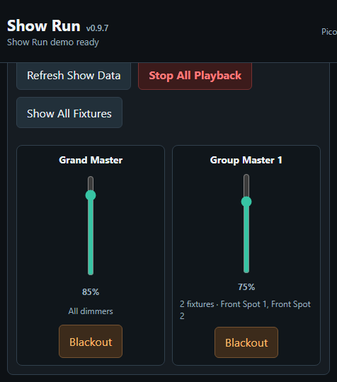
Groups Card
The Groups card contains the saved groups from the Controller page. Select one or more groups when you want scene, palette, or Group Master assignment to affect only those fixtures. Selecting a group also highlights the fixtures stored inside that group in the Fixtures card, so you can immediately see what the group contains. With no group or fixture selected, Show Run uses all fixtures.
Group selection is an operator filter only. It does not edit the saved group definitions and it does not save setup data.
While Edit is active, the pencil on a saved group tile also includes its MIDI mapping. A mapped hardware button selects or deselects that group through the same path as clicking the tile.
The Group Edit button opens a Controller-style Group Edit modal for the current Show target. The modal shows matching controls from the selected group or fixture target and sends live-value changes through the same Show Run output path as the other operator controls. Use it for quick grouped dimmer, color, wheel, or pan/tilt adjustments from the run page without opening the full Controller.
Relative nudge step sizes in this modal are autosaved to the Show Run UI state on the XAMPP server. Separate Pan/Tilt coarse and fine values are restored when the modal or page is reopened and remain independent from the step sizes used on the setup and playback-editing pages.
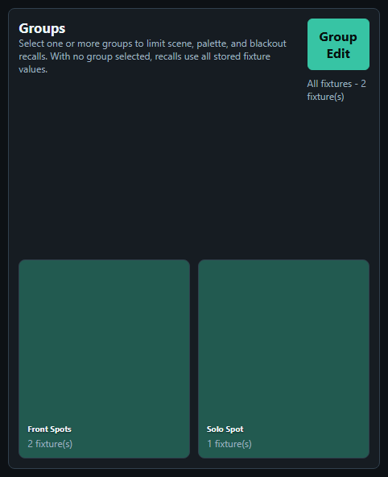
Fixtures Card
The Fixtures card lets you target individual fixtures without creating a saved group. Click a fixture tile to select or deselect it. When a group is selected, its member fixtures are mirrored here; when you change the fixture selection manually, the group selection is cleared and the current show target becomes the explicitly selected fixtures.
Use this when a scene, palette, or Group Master should apply to one fixture or a temporary hand-picked set. If you manually select or deselect a fixture here, the active group selection is cleared because the target is now an explicit fixture selection.
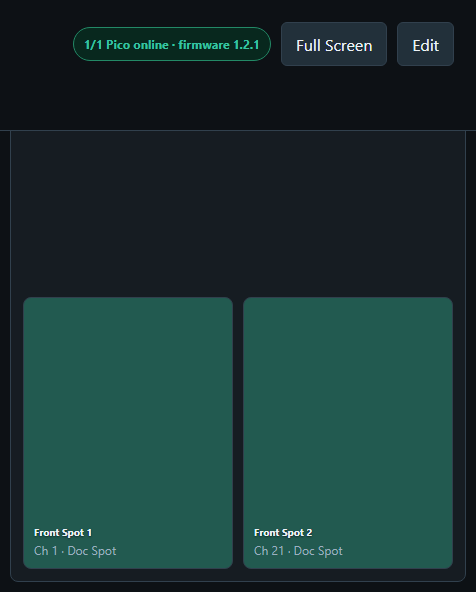
Scenes Card
The Scenes card recalls saved scene tiles from the Controller page. Click a scene tile to recall that scene to the current target. Show Run writes the recalled values to the live-value snapshot and sends the matching DMX channels to the Pico in one /dmx/b batch when a Pico base URL is set.
While Edit is active, click the scene pencil, click Learn in the MIDI Mapping section, and press a hardware button. Pressing that button later recalls the scene.
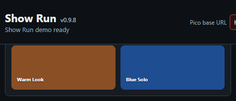
Palettes Card
The Palettes card recalls saved position, color, beam, dimmer, and effect palettes. If a group or fixture target is active, only stored values for the targeted fixtures are recalled. This lets one saved palette be reused for different parts of the rig.
Palette pencils expose the same MIDI Learn section while Edit is active. A mapped hardware button applies the palette to the current Show target.
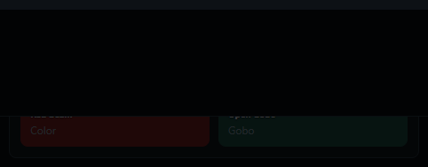
Pixel Matrices Card
The Pixel Matrices card recalls pictures created and mapped on the Fixture Controller page. If the card is not already part of your saved Show layout, click Edit, click an empty card +, choose Pixel Matrices, and click Add Pixel Matrices Card.
Click a picture tile to send its mapped colors immediately. With no Groups or Fixtures selected, every compatible mapped fixture is recalled. When a Show target is selected, only mappings belonging to those fixtures are applied. This works with separate RGB/RGBW/RGBWA/CMY/CMYK fixture controls and individual pixels of a native RGB pixel matrix control. The recalled values are written to the shared live-value snapshot, so the Controller and Chaser see the same current look.
Pixel Matrix cards use the standard Show layout behavior. During Edit, change Cols and Rows, drag or tap picture tiles to arrange them locally, remove a picture from only that card with its x, or add another Pixel Matrices card with an independent layout. Edit the saved picture itself—including its image, fixture mappings, name, or deletion—on the Fixture Controller or Chaser page.
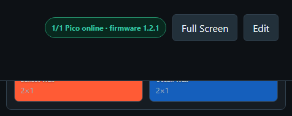
Planes Card
The Planes card recalls saved room planes from the Plane page. Click a plane tile to open a virtual room modal without leaving Show Run.
The modal uses the current Show target. Select Groups or Fixtures first when only part of the rig should move; with no target selected, Show Run targets all fixtures that match the recalled plane. Drag or click the red target point, use the X/Y coarse and fine nudge buttons, or use zoom and pan view controls to frame the room. The modal sends calibrated pan/tilt values live to the Pico and updates the shared live-value snapshot so the Controller, Chaser, and Effects pages can see the new position. Recalling a plane from Show Run does not edit the saved plane definition.
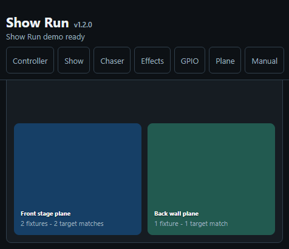
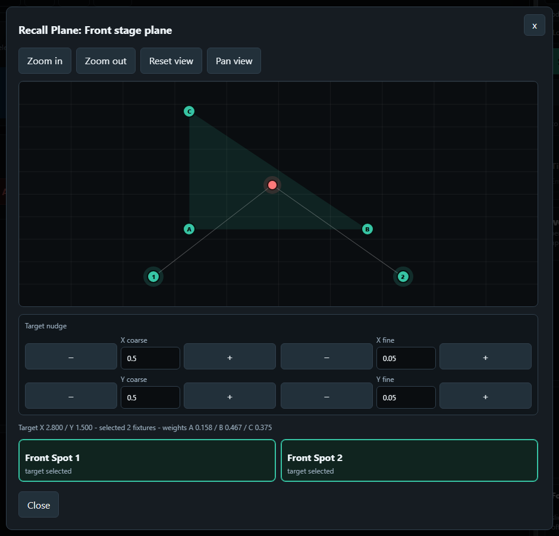
Pico Playback Cards
The Pico Chaser Playback card shows chaser slots uploaded from the Chaser page and mirrored to XAMPP. It also reads live Pico slot state, so a slot that is loaded on the Pico can still appear even when the XAMPP mirror is empty. Use the card controls to choose a slot, set speed, play, pause/resume, set speed, or stop.
In Edit mode, each loaded chaser tile has a pencil that opens its MIDI mapping editor. Choose the button's Playback action before learning it: start/stop toggle, start, stop, pause/resume toggle, pause, or resume.
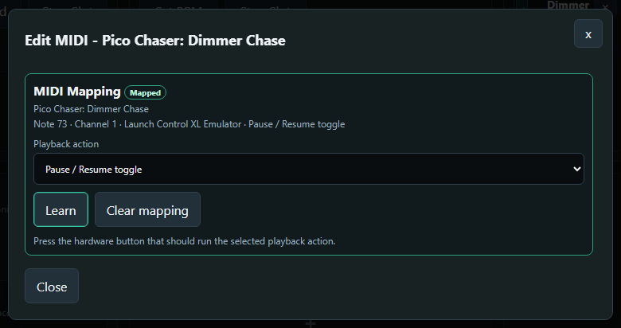
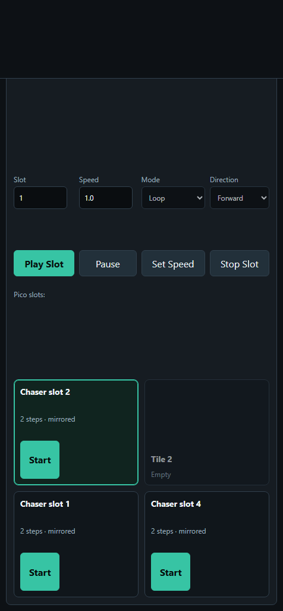
The Pico Effects Playback card shows effect slots uploaded from the Effects page. Choose a slot, set BPM, then start, set BPM, or stop the slot. Starting a mirrored slot reloads its payload before running it; starting a live-only Pico slot starts the already-loaded Pico slot without overwriting it.
Loaded effect tiles have the same MIDI edit pencil and playback-action choices, including dedicated pause and resume buttons or one pause/resume toggle.
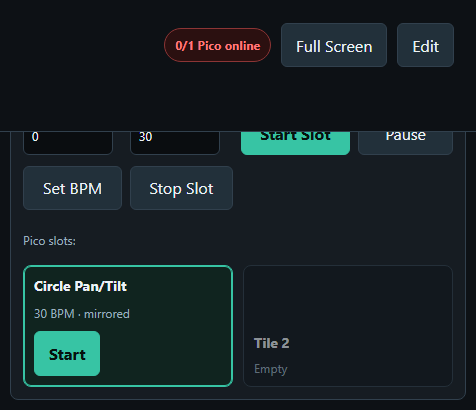
MIDI Controller Card
The MIDI Controller card has two independent inputs:
- Computer USB MIDI connects a class-compliant controller, such as the Novation Launch Control XL, to Chrome or Edge on the XAMPP computer. Click Connect MIDI, allow browser MIDI access, and select the input and optional output ports. The page prefers a connected Launch Control XL automatically when available.
- Pico UART diagnostics keeps the original read-only Pico GPIO5/UART1 monitor. It shows the UART/baud configuration, byte and message counters, parse errors, and last decoded event. This Pico input is not used by the new Show mappings.
Click Open MIDI Emulator to test without the physical controller. It opens dmx_midi_emulator.html in a separate tab with 24 knobs, 8 faders, 16 channel buttons, and 8 utility buttons. The controls show the CC or note number they send. Keep Show Run and the emulator on the same XAMPP address; the connection indicators turn green when both tabs can see each other.
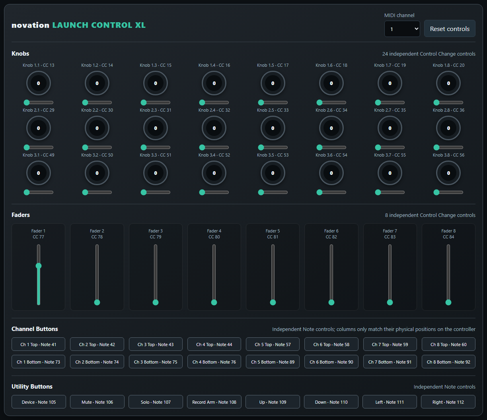
To learn with the emulator, enter Edit on Show Run, open a supported pencil, click Learn, switch to the emulator tab, and operate the desired control. Switch back to Show Run and click Done, then operate the emulator control again to test the mapped action. The emulator uses a same-origin browser channel and does not install or emulate a Windows MIDI device. Mappings learned from it are treated as Launch Control XL-family mappings so they can also match the physical controller later.
Open Show Run through http://localhost/dmx/ on the XAMPP computer. Web MIDI requires a supported browser and a secure context; localhost qualifies for this local workflow. The browser asks for hardware MIDI access only after Connect MIDI is clicked. The emulator does not need Web MIDI permission.
MIDI mappings are edited only while Edit is active. Use the pencil on a supported tile or control, choose a playback action when editing a Pico Chaser or Effects tile, click Learn, then move a knob/fader or press a button. The first version supports Groups, Scenes, Palettes, Pico Chaser Playback, Pico Effects Playback, Grand Master, Group Masters, and Live Controls. Other Show cards remain unmapped until their desired behaviour is defined.
For Group, Scene, and Palette tiles, the MIDI Mapping section is part of the normal Edit Tile modal. The mapping summary shows the learned message type, number, channel, and device. Clear mapping removes only the MIDI assignment; it does not delete or change the tile.
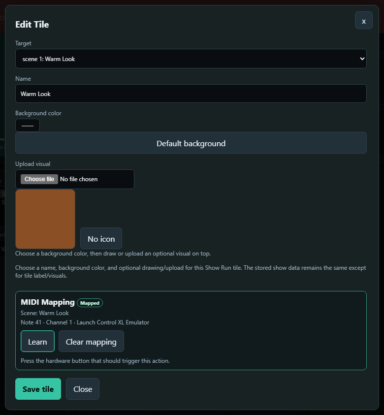
Button mappings trigger on the press edge, so the release message does not repeat the action. Faders and knobs scale MIDI 0..127 to the complete target range. Soft takeover is enabled by default: if the physical control and Show value differ, output waits until the physical control reaches or crosses the current value. Continuous messages are coalesced before they use the normal Show/Pico output path.
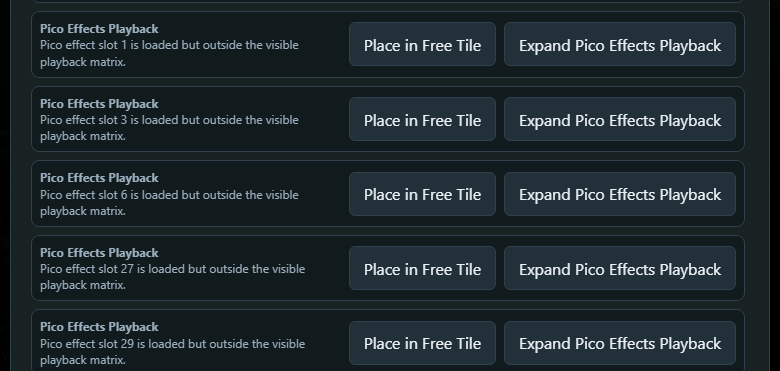
Mappings are stored with the server-side Show Run UI state and are included in setup export/import. The USB connection and selected computer ports are local to the browser; reconnect after opening a new browser session.
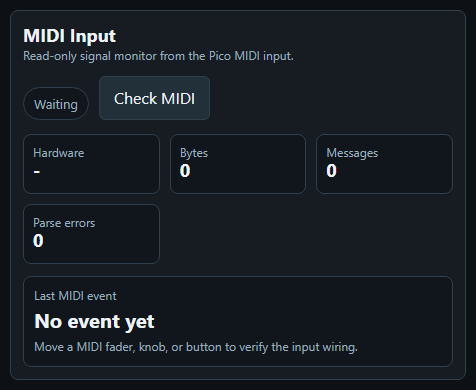
Layout Editing
The sticky title bar has Edit on the right. Layout and MIDI mapping tools are hidden during normal operation. Click Edit to configure the Show page, then click Done to return to the cleaner operator view.
In layout edit mode, the top of Show Run has a page-level card matrix. Use Card cols and Card rows to choose how many operator cards fit in the page grid. Empty card positions show a + tile; click it to open Add Card, choose the card type, then add it at that matrix position. If the matrix is full, Show Run still shows one extra + tile at the next position so another card can be added. After a card is added, Show Run reports the matrix position where it was placed. Every card type can be added more than once, so you can keep separate palette, scene, playback, or Live Controls cards with different tile layouts. Each card has a small top-right x while layout editing is active. That x removes the card from the Show Run page only; it does not delete the saved scenes, palettes, groups, chases, effects, or fixture data behind it.
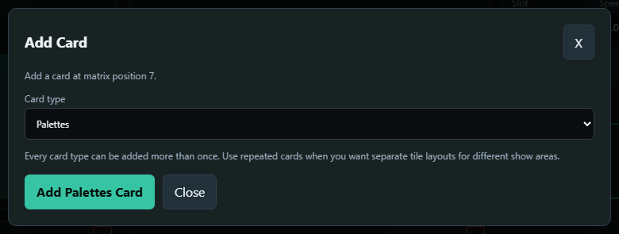
Drag a card by its title/header area to arrange whole cards, for example moving Palettes to the top-left and Pico Effects Playback to the top-right. Dragging a card to an empty matrix spot places it there and leaves the other card positions unchanged. Dragging a card onto another card swaps only those two cards. The card body remains available for tile editing and other configuration controls while Edit is active.
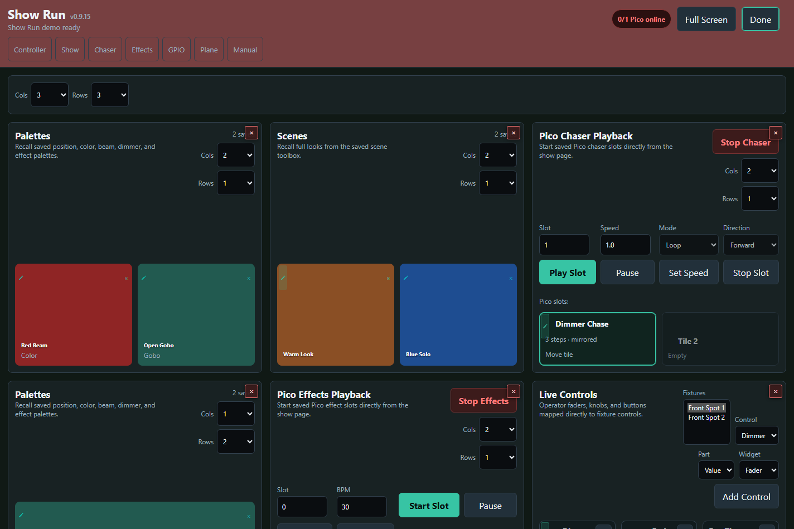
Each tile section on Show Run has native Cols and Rows dropdowns like the toolboxes, including the overall card matrix and any repeated cards. Tap a dropdown to use the native iPad picker. These controls shape the operator page layout for groups, fixtures, scenes, palettes, planes, Pico chaser slots, and Pico effect slots. While Edit is active, tile move mode is active automatically: drag a filled tile to another position, or on touch screens tap the filled tile and then tap the destination tile. Show Run saves card layout, tile layout, Live Controls configuration, and MIDI mappings to the XAMPP server UI state, so the same operator page is restored on another computer and included in Export Show / Import Show. The layout does not rewrite the saved toolbox setup itself.
If saved groups, scenes, palettes, planes, or loaded Pico playback slots are outside the visible matrix, Show Run opens Hidden Show Items and switches into Edit. Use Expand to increase that section's rows/columns until the hidden item is visible, or use Place in Free Tile when an empty visible tile is available. This prevents newly created palettes/scenes/planes or moved playback slots from being silently hidden on a row that is not currently displayed.
While Edit is active, saved group, scene, and palette tiles also show the small pencil and x actions. The pencil opens Edit Tile, where the tile name, background color, uploaded icon, or drawn icon can be changed and where the tile's MIDI mapping can be learned or cleared. These visual edits change the shared saved tile, so the updated name/color/icon appears on the setup page and in every Show Run card that uses that item. The small tile x only removes that item from the current Show Run card position. It does not delete the saved group, scene, or palette from the XAMPP setup files, and it does not remove that same item from another repeated Show Run card.
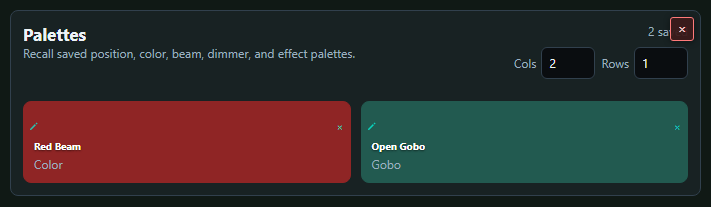
Pico chaser/effect playback tiles use the same tile move behavior during editing. Their playback buttons are replaced by Move tile while Edit is active, so a show cannot accidentally start or stop playback while you are arranging the operator page. Their upper-left pencil opens the MIDI mapping editor.
Live Controls
The Live Controls card can hold operator faders, knobs, and buttons that write directly to fixture controls without opening the full Controller page. Click Edit, choose a patched fixture, control, control part, and widget type, then click Add Control. The setup controls are hidden when Done is active so the operator page keeps more space for the actual controls. Multiple Live Controls cards can be used to separate faders, buttons, and mixed show controls. Faders and knobs send their value while they are moved. Compound controls are split into clear parts such as Pan, Tilt, Red, Green, Blue, White, or Amber. These widgets update the live-value snapshot and send the matching DMX bytes to the Pico when a Pico base URL is set. Use the upper-left pencil on a Live Control to learn or clear its MIDI mapping.
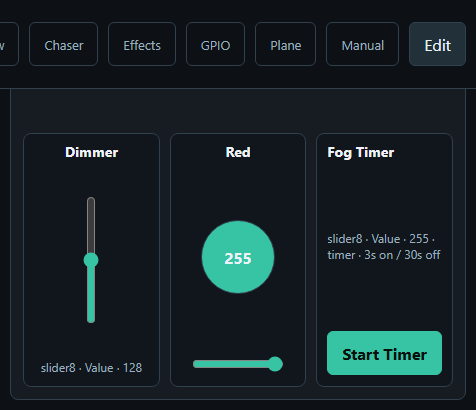
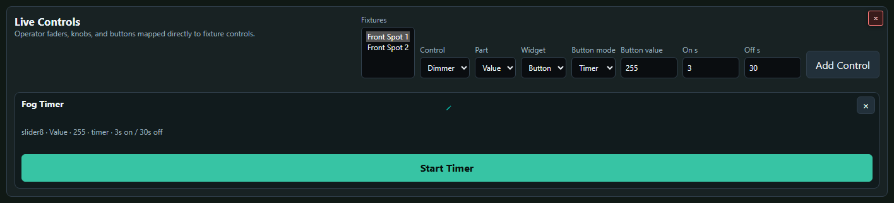
To create a momentary button, set Widget to Button, set Button mode to Hold, choose the value to send, then click Add Control. Hold sends the configured value only while the button is pressed. When the button is released, Show Run restores the value that was active before the press.
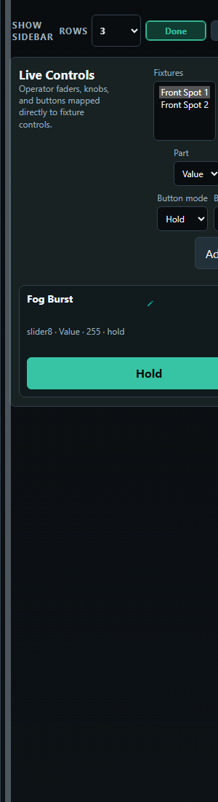
To create a fog or haze timer, set Widget to Button, set Button mode to Timer, choose the output value, then set On s and Off s. The timer sends the configured value for the On time, restores the previous/off value for the Off time, and repeats until stopped. While it is running, the widget shows the current On/Off phase, remaining seconds, and a progress bar similar to the Chaser timing display. Stopping or deleting a timer button restores the previous value.

Use Apply mode for one-shot commands that should send the configured value once and stay there.
Live Control card configuration is stored with the server-side Show Run preferences. Use the small x on a live widget while Edit is active to remove it from the operator page.
Output Behavior
Scene, palette, Live Control, Grand Master, and Group Master output all use the same current target rules. Selected Groups and Fixtures define the target. With no selection, all fixtures are targeted.
Show Run blackout is handled by the master faders. Click Full above a master fader to set that master to 100%. Click Blackout below the Grand Master to set the Grand Master to 0% for all dimmers. Click Blackout below a Group Master to set only that Group Master to 0%. These buttons use the same master output path as moving the fader manually, so they do not overwrite stored live values. When any Grand Master or Group Master factor is below 100%, Show Run sends affected dimmer channels to the Pico output-scaling endpoint as channel:scale factors. The Pico keeps chaser and effect playback writing their normal raw values, then scales the transmitted DMX output, so a running dimmer sine effect remains visible but follows the Grand/Group Master level. When you enter Show Run, saved Grand Master and Group Master factors are restored to the Pico scaling layer. When you leave Show Run, the page clears the Pico master scale and restores dimmer output to the underlying live values without those multipliers, so setup pages do not inherit the temporary show-level dimming.
The global Stop All Playback button calls both Pico stop endpoints.
Show Run is intentionally read-mostly during normal operation. Outside Edit it does not create scenes, edit palettes, change fixture profiles, or overwrite the show setup files. In Edit, card placement, tile placement, Live Controls, MIDI mappings, and tile label/visual edits are saved intentionally.
5. Chaser

The Chaser page creates step-based sequences. The main page stays focused on Participating Controls and Edit Step, while the repeated working tools sit in the Toolboxes sidebar.
The Chaser screenshot is captured with the important boxes visible on purpose: Groups, Chases, Chase Steps, and Chase Playback. To reorder them, click Edit in the Toolboxes header, drag colored toolbox headers up or down, and click Done. The order is shared with the other pages: if a page does not use one of the toolbox types, the next available toolbox moves up.
Basic Workflow
- Open Chaser.
- Select participating fixture controls.
- Create steps with Add step, Capture + Add, or Capture from FC.
- Set step duration and fade in Edit Step.
- Store the chase in the Chases toolbox if you want quick recall.
- Test timing in Chase Playback.
- Click an empty Pico slot to upload the current chase to that slot.
- Play the slot from the Pico.
Main Work Area
The Chaser page is arranged from top to bottom as Participating Controls, Edit Step, and Pico Playback. Use the cards in that order when building a chase: choose the fixture controls that may participate, edit the selected step values, then upload or play Pico slots after the chase behaves correctly.
The Toolboxes sidebar sits beside the main work area on desktop-sized screens. It contains the repeated tools for Groups, Chases, Palettes, Chase Steps, Fan Out, and Chase Playback.
Toolbox Sidebar
Controller, Chaser, and Effects use a shared right-side toolbox sidebar on desktop-sized screens.
- Drag the vertical resize line on the left edge of the sidebar to change its width.
- The sidebar width is shared across all toolbox pages.
- Double-click the resize line to reset the default width.
- The page content and the toolbox sidebar scroll independently. The page scrollbar sits beside the toolbox separation line, while the toolbox scrollbar stays inside the toolbox sidebar.
- Use the arrow button in the Toolboxes header to collapse or reopen the whole sidebar. The collapsed state is shared across toolbox pages.
- The Toolboxes header stays visible at the top of the sidebar while its toolbox tiles scroll, keeping Edit and the sidebar arrow within reach.
- Toolbox reordering is locked by default. Click Edit in the Toolboxes header, drag a toolbox by its colored header, and click Done when the order is correct. The toolbox body is never a drag handle. While Edit is off, dragging a colored header scrolls vertically instead of moving the toolbox, which prevents accidental rearrangement on iPad. While Edit is active, the app uses pointer dragging instead of Safari's native drag/drop.
- The Cols and Rows dropdowns in tile-based toolboxes are visible only while Toolboxes Edit is active. Their native pickers and 44-pixel touch targets make the matrix size easier to choose on iPad. Edit also enables movement in every tile matrix automatically, so no separate Move button is needed. Clicking Done hides the layout controls and restores normal tile actions.
- On narrow screens, the sidebar changes into a bottom toolbox drawer.
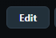
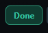
The Chaser page uses several toolboxes:
- Groups filters the fixture list by one or more saved fixture groups. It uses the cyan header, like the group tools on the controller page.
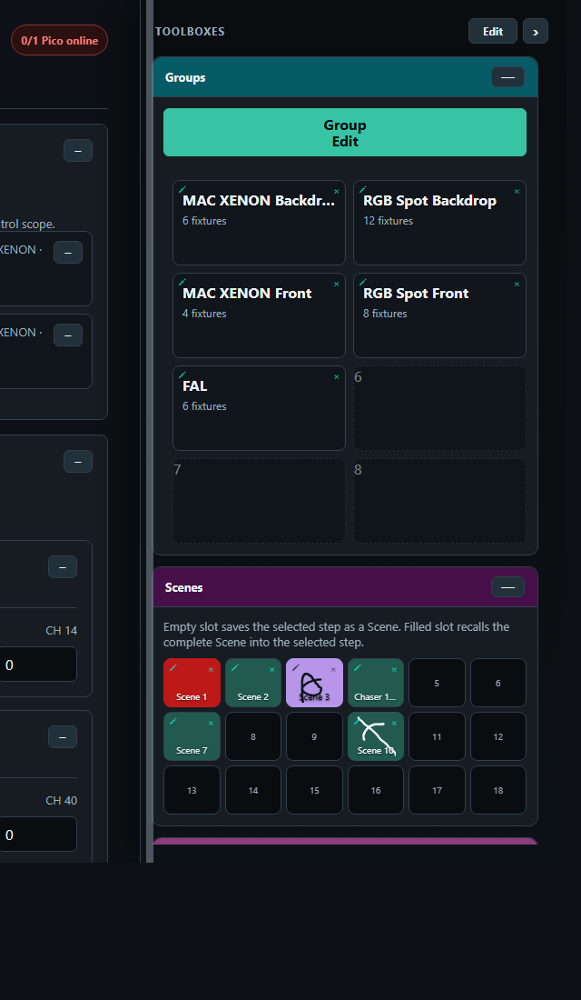
- Chases stores complete editable chases in a slot matrix. Clicking an empty slot saves the current chase. Clicking a filled slot loads that chase.
- The small top-left pencil icon on a filled Chases slot opens Edit Tile for the chase name, background color, and optional drawn/uploaded visual. Default background restores the standard slot color, and No icon removes the overlay image. This is only a label; loading a chase still uses the stored chase steps and playback settings.
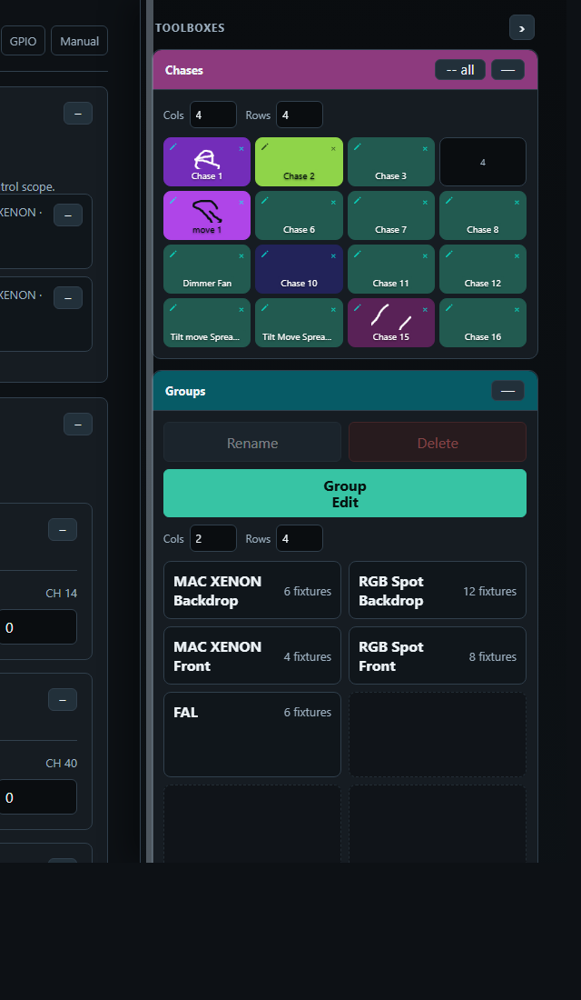
- Palettes stores and recalls reusable step fragments. Clicking an empty palette slot saves the currently selected step's fixture/control values to the shared palette JSON. Clicking a filled palette slot recalls compatible values into the selected step and rebuilds Participating Controls from the palette's stored fixture/control keys. If no step is selected, Chaser creates a new selected step from the palette. Merge adds the selected step's values into an existing palette; if the palette scope differs, Chaser asks before changing it to All controls. The small top-left pencil icon opens Edit Tile for a saved palette slot's name and visual appearance. When a Pico base URL is set, recalled palette values are also sent to the Pico.
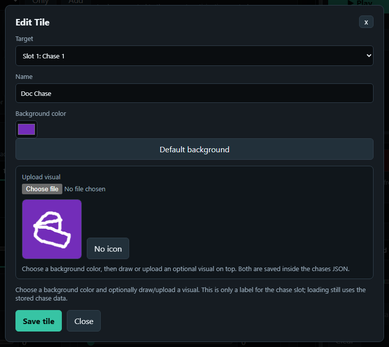
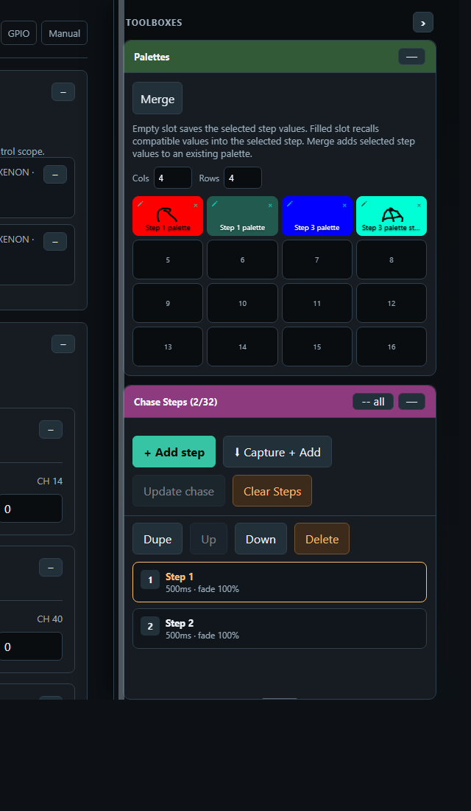
- Scenes uses the same saved Scene tiles as the Fixture Controller. Clicking a filled tile replaces the selected chase step with the complete Scene, makes the Scene controls the participating controls, clears an unrelated Groups filter, and sends those values live when a Pico base URL is set. Clicking an empty tile saves the selected step as a shared Scene. The pencil edits the shared Scene name/visual,
xdeletes it, and Cols and Rows update the shared Scene layout while Toolboxes Edit enables tile movement. - Pixel Matrices shows the pictures saved in the Fixture Controller. Click a filled picture tile to recall all of its compatible mappings into the selected chase step. If no step is selected, Chaser creates and selects a new picture step. To create an animated sequence, recall the first picture, add or select the next step, recall the next picture, and repeat. The picture becomes normal chase data: browser Chase Playback can fade or switch between the steps, and uploading the chase to a Pico slot expands native matrix pixels into their RGB DMX channels for standalone playback. Recalling a picture also stops active browser and Pico playback before sending the selected picture as a live DMX preview. Use the pencil on any filled tile to open the same editor used by Controller, where you can rename, resize, remap, upload or reconvert an image, preview it in the selected chase step, and save it to the shared fixture setup. Use
xand confirm to delete the shared picture. Tile-layout changes remain on the Fixture Controller. - Planes recalls saved room planes into the selected chase step. Select a group first if only part of the rig should be affected. Chaser uses the plane target and calibrated fixtures to write pan/tilt values into the step, rebuilds the participating controls for those pan/tilt channels, and sends the changed step values to the Pico when a Pico base URL is set. The Planes tile matrix uses the same Cols, Rows, and Toolboxes Edit movement behavior as the other saved tile toolboxes.
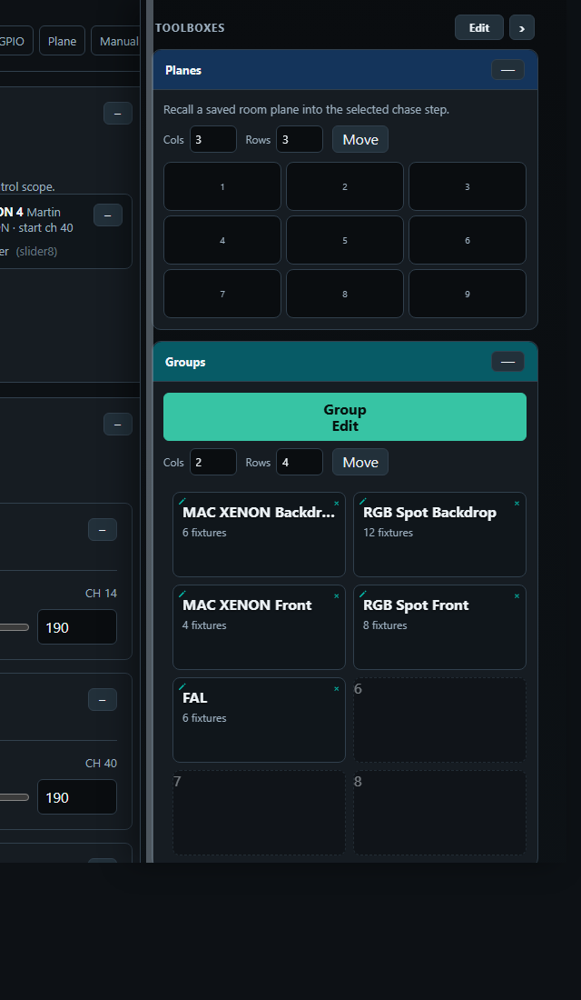
- Chase Steps contains the step list and step actions. Use it to add, capture, edit, duplicate, delete, and reorder steps. In the Toolboxes sidebar, drag the lower edge of the Chase Steps box to set its height. The top buttons remain visible while the step list scrolls inside the box.
- Chases, Chase Steps, and Chase Playback share one toolbox color and collapse together. Use -- all on any of those boxes to collapse the whole color group, and + all to reopen it.
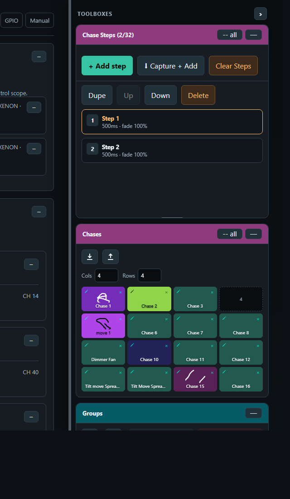
- Fan Out is a live step-shaping tool. It works on the currently selected step and writes directly into Edit Step as soon as you change the Fan Out mode, spread, or range values. There is no separate Snapshot or Apply action on the Chaser page.
- Fan Out control selection is filtered by the selected step. The control dropdown only shows compatible single-value controls that are actually part of the selected step's participating controls and exist on at least two fixtures. If one or more groups are selected, the same rule is applied inside the selected groups only.
- Fan Out order comes from the current participating fixture/control list. If a group filter is active, only fixtures inside the selected groups participate, but the calculation still follows the participating order that is shown for the current step/scope. In Symmetric spread mode, negative Spread runs the shape from the opposite side of the fixture row.
- Fan Out base values come from the values currently displayed in Edit Step. Selecting another step, loading another chase, capturing values, or using Group Edit refreshes the Fan Out base from the step values now shown on screen. This keeps spread calculations from drifting away from the edited step.
- Clear in the Chaser Fan Out toolbox resets the Fan Out shaping controls to neutral. It does not recall an older preset and it does not undo values that have already been written into the selected step.
- Editing Edit Step, using Group Edit, and changing Fan Out updates the selected step immediately. When a Pico base URL is set, those changed selected-step values are also sent to the Pico. Chase Playback sends the current chase continuously while it runs and therefore requires a Pico base URL.
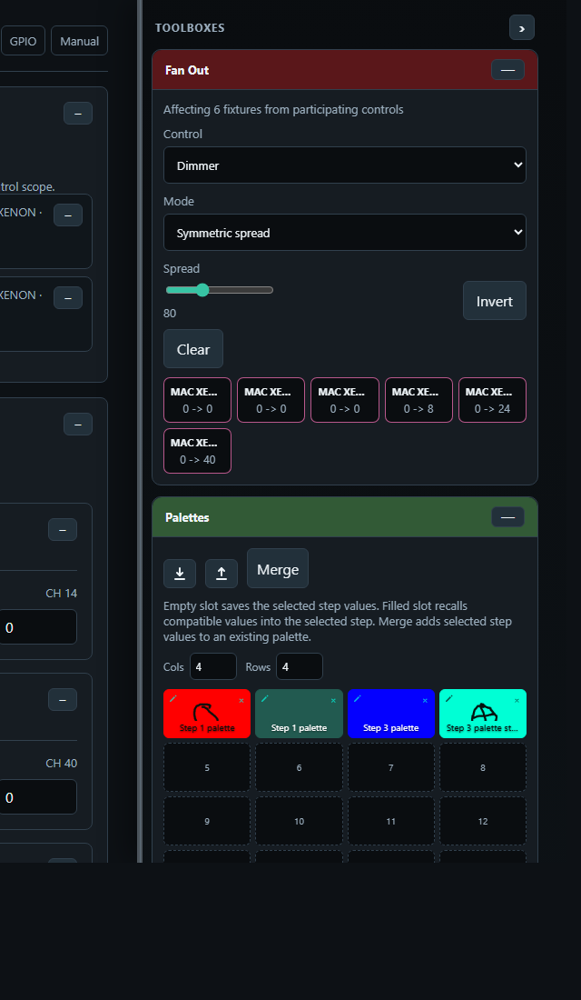
- Chase Playback runs the current chase from the browser for checking timing and fades before uploading to the Pico. Mode chooses Single, Loop, Loop N, or Ping Pong. Direction chooses whether playback starts at the first step and moves forward or starts at the last step and moves backward. Loops is only used by Loop N; normal Loop runs forever. Ping Pong reverses at the end of the chase instead of jumping back to the first or last step. The Fade % (all steps) field applies one fade value to every step immediately. Use Edit Step > Fade % when one step needs its own fade value.
- While Chase Playback runs, the currently playing step automatically becomes the selected step. This means Edit Step follows the chase visually and always shows the values of the last played step. Recalling a saved chase still selects Step 1 first, so playback starts from a predictable view.
- Selecting a step in Chase Steps stops browser Chase Playback and both Pico playback engines, then sends that step's programmed DMX values immediately. This lets you verify positions, colors, and other programmed values without starting the chase. Manually changing controls in Edit Step also stops browser Chase Playback so playback cannot immediately overwrite the values you are editing.
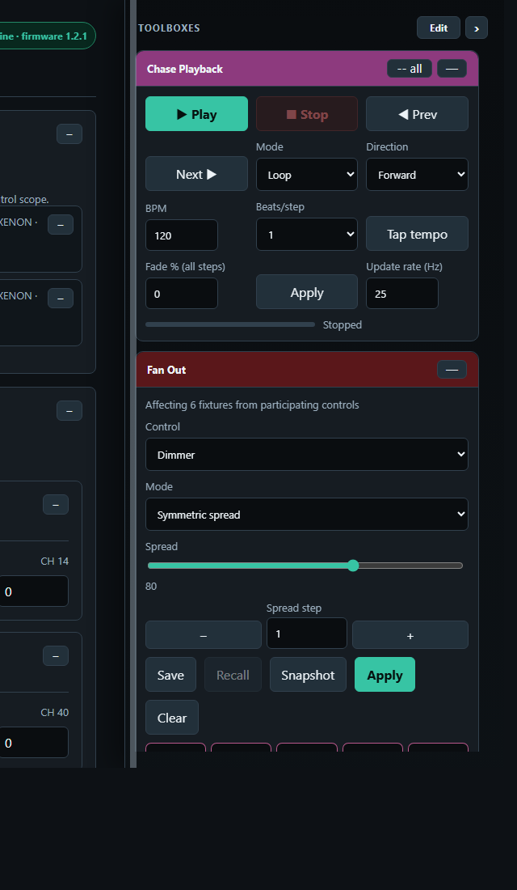
On page load, the Chaser working area starts with no steps selected. Use the Chases toolbox to recall a saved chase. Loading a chase from the Chases box stops Pico Chaser and Pico Motion playback, updates the step list, selects Step 1, and rebuilds participating controls and the currently edited step together. If browser Chase Playback was already running, the recalled chase begins playing immediately; otherwise, Step 1 is sent to DMX as a static preview. If the chase contains steps, the participating controls are rebuilt from the values stored in the chase, so old fixture/group filters do not hide the controls used by that chase.
Saved chases also recall the playback controls that were saved with them, including browser mode, Loop N count, Ping Pong, direction, BPM, and Pico speed. The Chases toolbox tiles still show only the chase name and visual so they stay consistent with the other toolboxes. Uploading to a Pico slot uses the current Chase Playback playmode, loop count, and direction, so the Pico slot behaves like the chase you previewed in the browser. Per-slot playback details are shown in the Pico Playback slot tiles after a chase has been uploaded to a Pico slot. Each loaded Pico slot shows compact lines for loop state, direction, and Ping Pong state.
The collapse state, toolbox order, shared sidebar width, and the user-defined Chase Steps box height are stored by the server UI-state file, so the working layout survives reloads. Collapsing Participating Controls or Edit Step only hides that card body: the sticky page header keeps the same height, and the next card moves up to use the freed space.
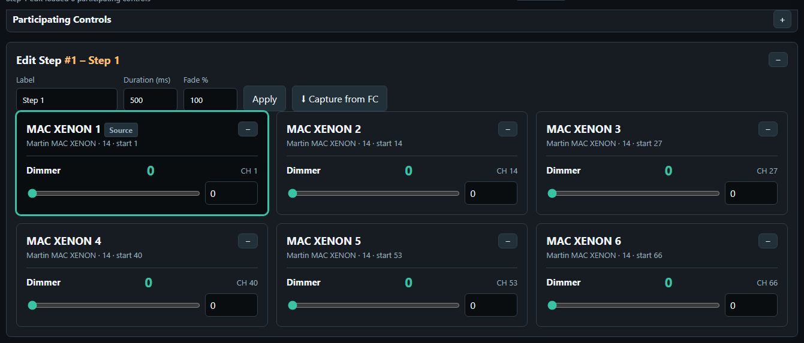
Chase Steps Toolbox Buttons
The Chase Steps toolbox uses shared action buttons instead of per-step buttons. Click a step card to select the step first; the selected step is highlighted and loaded into Edit Step.
- Add step creates a new selected step from the stored default values of the currently participating controls. If a fixture profile has no custom default for a control, Chaser uses the control type fallback.
- Capture + Add creates a new selected step only when Fixture Controller live values exist for at least one currently participating control. If no matching live values are available, no empty step is created.
- Clear Steps deletes all current working steps after confirmation. It does not delete saved Chases toolbox entries or Pico slot payloads.
- Dupe duplicates the selected step directly after itself and selects the copy.
- Up and Down move the selected step in the step order and keep the same step loaded in Edit Step.
- You can also drag a step card with mouse or touch and drop it before or after another step card to reorder the chase. A short click still selects the step. The selected step and the currently playing step stay attached to the same step data after the move.
- Delete removes the selected step. If another step remains, it becomes the selected step.
Participating Controls
Participating controls define which fixture controls belong to the chase. This keeps the chaser from editing unrelated channels.
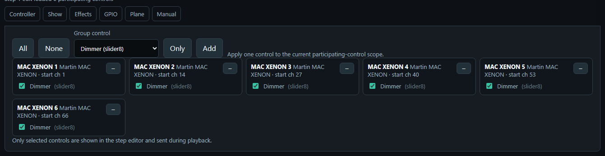
For example, a dimmer chase might include only dimmer controls. A color chase might include only RGB or RGBWA controls.
If no group is selected, all patched fixtures are available. If one or more groups are selected in the Groups toolbox, only fixtures from those groups are shown while you are choosing the scope. Any direct change in Participating Controls then clears the group selection. This avoids mixing two different filters: after you press All, None, Only, Add, or tick an individual checkbox, the participating-control set becomes the source of truth.
The Group control dropdown is built from the fixtures currently visible in the participating-control scope, not from the controls that are already ticked. With no Groups filter, the dropdown stays based on all visible patched fixtures even after Only narrows the selected participating controls. With a Groups filter, the dropdown is based on the selected groups. When an edited step is active, the visible step fixtures define the dropdown scope.
All selects every valid participating control for all patched fixtures, clears the Groups filter, expands the participating fixture list, stops browser Chase Playback, clears the selected step, clears Edit Step, clears the Source fixture, and resets Fan Out bases. Existing steps in Chase Steps are not deleted. After All, use Add step, Capture + Add, or Group Edit to create or edit a step from the full participating-control scope.
Group Edit edits the current participating-control scope. It becomes available when the current scope contains at least one matching selected control on two or more participating fixtures, even when those fixtures use different fixture profiles. A step does not need to be selected first. If no step is selected, the first Group Edit value change creates a new step from the current participating controls and writes the edit into that step. If a step is selected, Group Edit edits that selected step.
The fixtures may use different profiles; the modal only shows matching controls that are actually selected as participating controls and exist on at least two fixtures. For example, if only Dimmer is selected, Group Edit opens with Dimmer only and applies a changed Dimmer value to every involved fixture that has a matching Dimmer control.
Group Edit uses the Source fixture from Edit Step as the reference value. Opening the modal reads the Source fixture's current selected-step values into the modal controls. It does not automatically overwrite the other fixtures, does not create a new step, and does not send output by itself.
The values are written when you change a control in the modal. If no step is selected, the first Group Edit value change creates a new step from the current participating controls and writes the edited value into that step. If a step is selected, the edit writes into that selected step. When a Pico base URL is set, changed selected-step values are also sent to the Pico.
Chaser Selection Rules
The Chaser page has two different selection modes: defining a new participating-control set, and editing or recalling an existing step. They intentionally behave differently.
Keep these rules as the contract for the Chaser page:
- Participating Controls define the fixture/control scope for new steps and for Group Edit.
- Edit Step shows the currently selected step, not a separate preview copy.
- If a saved chase is recalled, Step 1 is selected immediately and becomes the visible Edit Step.
- If Chase Playback is running, playback overrules manual step rendering: every played step automatically becomes the selected step and redraws Participating Controls plus Edit Step.
- During fades, Edit Step updates the existing sliders, readouts, XY dots, colors, and wheel highlights continuously from the interpolated playback values. The full card is only rebuilt when the played step changes.
- When playback stops or pauses, the last played step remains selected.
- Manual previous/next playback also selects the stepped-to chase step and redraws Edit Step.
- Group filters are only temporary scope builders. Direct Participating Controls changes clear the group filter.
- All clears the selected step/edit context but keeps the existing step list unchanged.
- Group Edit does not require a selected step. If no step is selected, the first Group Edit value change creates a new step from the current participating controls. If a step is selected, Group Edit edits that step.
- Opening Group Edit loads the current Source fixture values into the modal only. The output or selected step changes only after you edit a modal control.
When you define participating controls manually:
- If no group is selected, the Participating Controls panel shows all patched fixtures.
- If one or more groups are selected, the panel is temporarily filtered to the fixtures in those groups.
- All selects every currently visible control and clears the group selection.
- None clears the participating-control selection, collapses the fixture list, and clears the group selection.
- The control dropdown lists controls from the selected groups while a group filter is active. If no group is selected, it lists controls from the current participating-control scope.
- The control dropdown plus Only selects one matching control type from the current scope, clears all other controls, and then clears the group selection.
- The control dropdown plus Add adds one matching control type from the current scope without clearing existing participating controls, then clears the group selection.
- Ticking or unticking an individual participating-control checkbox also clears the group selection.
When you click a step in the Chase Steps toolbox:
- Browser Chase Playback, Pico Chaser playback, and Pico Motion playback are stopped before the step is recalled.
- The step values are checked against the current fixture setup.
- Invalid fixture/control references are removed from the edited step.
- The Participating Controls panel is rebuilt from the chase values.
- If no group is selected, only fixtures and controls that are actually stored in the selected step are shown, and Group Edit becomes step-dependent.
- If a group is selected, the selected step is filtered to that group and Group Edit uses the grouped fixtures as its edit scope.
- The Edit Step card shows the same scoped fixture/control set, so editing Step 2 cannot accidentally show or edit unrelated controls from another group or old filter.
- The selected step's programmed values are sent to DMX immediately so the look can be verified without starting playback.
When you click a saved chase in the Chases toolbox:
- The selected Groups filter is cleared first.
- The saved steps, playback settings, and Chase Playback settings are loaded.
- The first step becomes the edited step.
- Participating Controls and Edit Step are rebuilt from that loaded step.
- If the saved chase was made before fixtures were repatched, the page tries to remap old fixture IDs to the current setup by matching the same fixture profile in DMX start-address order.
- If no valid step values can be found, the page falls back to the saved participating-control map stored with the chase.
This means group selection is a tool for building, filtering, and group-editing a step. Loading a saved chase clears the group filter because the recalled chase data becomes the source of truth. After recall, Group Edit can still become available without a selected group because it uses the fixtures participating in the selected step.
Create Chase Steps
A chase step stores values for the selected Participating Controls. It does not store every patched fixture automatically.
To create a step manually:
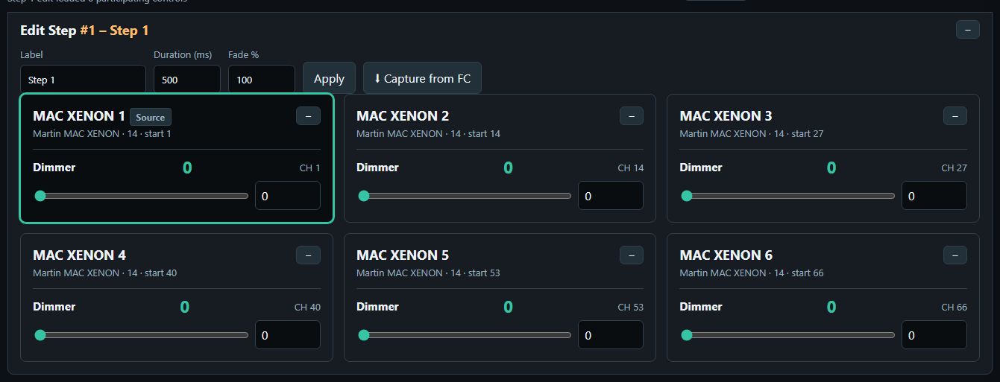
- Select the controls that should participate in Participating Controls.
- In the Chase Steps toolbox, click Add step.
- Click the new step in the Chase Steps list.
- In Edit Step, set Label, Duration (ms), and Fade %.
- Adjust the controls shown in Edit Step. Those control values are written into the selected step immediately. When a Pico base URL is set, they are also sent to the Pico.
- Click Apply after changing the label, duration, or fade.
Add step starts from the stored default values of the selected participating controls. If a fixture profile has no custom default for a control, Chaser uses the control type fallback: centered pan/tilt, zero for sliders, wheels, and color channels.
After Add step or Capture + Add, the first fixture in the new step is automatically marked as the Source fixture in Edit Step. Click another fixture card in Edit Step to make it the Source fixture. Group Edit uses the Source fixture's current step values as its starting values before writing changes to the matching participating fixtures.
Use the Palettes toolbox when the selected step should become a reusable fragment. Empty palette slots save exactly the selected step's stored values, not the whole chase and not all DMX channels. Filled palette slots recall compatible palette values into the selected step and make the palette's stored controls the active participating-control scope. Other values already stored in the step remain stored, but Edit Step focuses on the recalled palette controls. If no step is selected, recalling a palette creates a new selected step from that palette.
To capture a new step from the Fixture Controller:
- Open Fixture Controller in another browser tab or window.
- Build the look there by moving controls, recalling a scene, or recalling a palette.
- Return to Chaser.
- Make sure Participating Controls contains the controls you want to capture.
- In the Chase Steps toolbox, click Capture + Add.
Capture + Add creates a new step and copies the current Fixture Controller live values for the selected participating controls.
To capture into an existing step:
- Click the step in the Chase Steps list.
- Build the wanted look in Fixture Controller.
- Return to Chaser.
- In Edit Step, click Capture from FC.
Capture from FC updates the selected step with the current Fixture Controller live values for the selected participating controls.
Capture From Fixture Controller
Use Capture from FC or Capture + Add to read the current Fixture Controller live values and use them as chase step values.
This is useful when you want to build a chase visually:
- Create a look on the Fixture Controller.
- Capture it into the Chaser.
- Change the look.
- Capture the next step.
If Chaser reports that no Fixture Controller values are available, open the Fixture Controller page and move a control or recall a scene first. Capture only reads controls that are selected as participating controls, so unselected controls are ignored.
Pico Slot Playback
Chasers can be uploaded to 32 Pico slots. Each slot can run on the Pico without the browser staying open. The Pico slot strip is the upload target: click an empty slot to upload the current chase. Click a loaded slot once to select it for play, pause, resume, speed, or stop. Click the selected loaded slot again if you want to replace it with the current chase; the page asks before overwriting.
Starting a Pico slot with Play Slot stops browser Chase Playback first, so only one chase engine controls the DMX output.
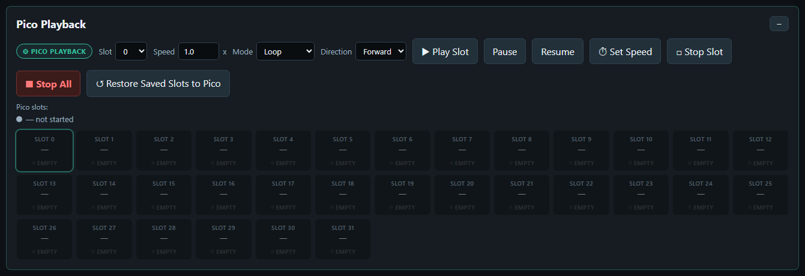
Supported playback options:
- Single run
- Loop
- Loop N times
- Ping Pong
- Forward or reverse direction
- Speed multiplier
- Pause and resume
Direction sets the first playback direction for the slot. In Ping Pong mode the Pico reverses direction whenever it reaches either end of the chase.
Each chaser slot supports up to 32 steps.
6. Effects

Effects creates continuous effects for one selected effect target at a time. It can drive a combined pan/tilt target, or one scalar DMX target such as dimmer, prism, gobo, zoom, or iris.
Supported effects include:
- Pan/tilt targets: Circle, Figure-8, Pan swing, Tilt swing
- Scalar targets: Sine, Pulse
Pan/tilt is treated as one combined two-axis target. Pan/tilt effects are relative to the current scene position, so the effect moves around the position that was last written into the Pico base buffer. Scalar controls are one-axis targets and use their displayed center value plus the Amplitude slider as the effect depth. Browser playback is only an overlay for testing; when you press Stop, Effects restores the stored base values to the output so the last moving effect position does not become the next center.
Participating Controls
The Participating Controls panel uses an Effect target dropdown. The default target is None. With None selected, no fixture tiles are enabled, Group Edit is disabled, and no effect can be played or uploaded.
Hard reload, including Ctrl+F5, resets Effect target to None and clears playback participation. Normal navigation away from Effects and back in the same browser tab restores the current working target, fixture participation, and parameters from session state. The saved server preset is not auto-applied on page load; use Load, import an Effects JSON file, or recall a saved Effect tile when you want to explicitly restore saved target and participant data.
One effect can only target one control type at a time: either pan/tilt, or one scalar control type. Choosing an effect target filters the fixture matrix to compatible fixtures, but it does not automatically enable those fixtures. This keeps target choice separate from fixture participation and prevents mixed targets such as dimmer plus gobo plus pan/tilt in one effect.
The Participating Controls card can be collapsed when you only need the toolboxes. In collapsed mode it stays compact and does not change the sticky page-header height.
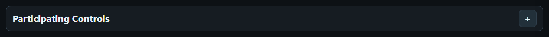
The fixture matrix is a selection and preview surface:
- Click a fixture tile to include or exclude it from the effect.
- Use All to clear any group filter and enable every fixture for the current target.
- Use None to disable every visible fixture for the current target.
- Selecting groups applies an additional filter and enables compatible fixtures inside the selected groups.
- Pan/tilt targets show a small XY plot with the current position.
- Scalar targets show a small value bar with the current value.
Center values come from the current base buffer or from recalling a scene as the effect center. Phase spread, amplitude, BPM, and effect shape are set in the Effect Parameters toolbox. The amplitude controls are target-aware and effect-aware. Circle and Figure-8 show Pan amp and Tilt amp. Pan Swing shows only Pan amp. Tilt Swing shows only Tilt amp. Scalar effects show one Amplitude slider. Hidden axes are forced to zero for preview and Pico upload, but their last two-axis values are remembered when you return to Circle or Figure-8.
The Effect dropdown is target-aware. It only shows effects that make sense for the selected Effect target.
The same target rules are used for Pico upload. Pan/tilt and scalar effects can be uploaded to one of the Pico effect slots, and the Pico reads the effect center from its base buffer while playing. Pan/Tilt profile mapping is included in the uploaded target: swapped axes use the swapped physical channels, and reversed axes invert the effect offset around the current base value.
The Effects page also includes the shared Palettes toolbox. Clicking a palette recalls any values that are compatible with Effects and uses them as the current effect center. For example, a position palette can set pan/tilt centers, while a dimmer or beam palette can set scalar centers. The small pencil opens Edit Tile so palette names and visuals can be adjusted from Effects too. Effects recalls, imports, exports, and saves the shared palette JSON.
The Effects toolbox stores reusable effect recipes. Click an empty effect slot to save the selected Effect target, participating fixtures, effect type, BPM, amplitudes, spread, and phase offsets. Effects do not store the current center/base values, so the same saved effect can be reused with different scene or palette centers. With the browser preview stopped and its button showing Start, clicking a saved effect only recalls the recipe. When the preview is already active and the button shows Stop, clicking another saved effect restarts the browser preview immediately with that recipe's saved timing and update rate, making it easy to audition several effects. Recall never uploads the recipe to a Pico slot. The small pencil opens Edit Tile for the effect name, background, and optional drawing/upload.
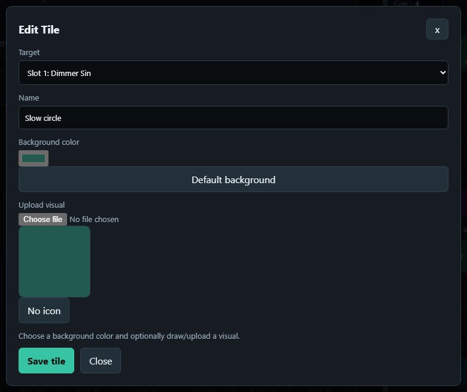
Effect Parameters and Effects share one toolbox color and collapse together. Use -- all on either box to collapse the whole effect group, and + all to reopen it.
Pico Effects Slots
The Pico effect slot upload uses the same selected Effect target as the browser page.
- If the target is pan/tilt, the uploaded slot stores pan and tilt channel addresses and plays two-axis effects.
- If the target is pan/tilt, one-axis effects still store the pan/tilt channel addresses, but unused amplitude axes are uploaded as zero: Pan Swing uses
AMP1and zeroAMP2; Tilt Swing uses zeroAMP1andAMP2. - If the target is scalar, the uploaded slot stores that one control's DMX channel address and plays one-axis effects such as sine or pulse. Scalar uploads use
AMP1for Amplitude and forceAMP2to zero. - Click an empty Pico slot to upload the current effect to that slot.
- Click a loaded slot once to select it for start, stop, or BPM changes.
- Click the selected loaded slot again to replace it with the current effect; the page asks before overwriting.
- Slots store channel mappings, BPM, amplitude, spread, effect type, and target phase. They do not store fixed center values.
- The center value is read from the Pico base buffer during playback. This means a scene recall or live controller change can define the center before the slot starts.
- Up to 64 effect slots can be loaded on the Pico.
For scalar targets, set the current value first, then upload/start the slot. For example, set a dimmer to its desired base brightness and use Sine if you want the Pico to pulse above and below that base value.
Effects Toolboxes
The Effects page uses five toolboxes in the shared sidebar.
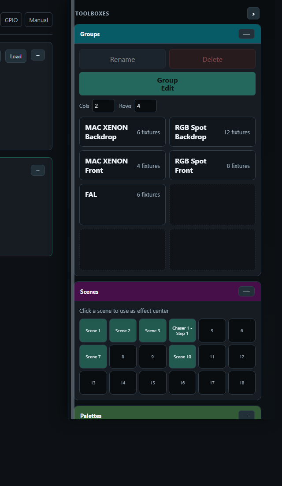
Groups filters the fixture matrix for the selected effect target. When Effect target is None, Group Edit is disabled. Choosing a real target does not automatically enable fixtures for playback, but it does make Group Edit available as soon as at least one fixture has that target. For example, after a hard reload, choosing Dimmer lets Group Edit work across every MAC and RGB Spot fixture that has a Dimmer control while playback participation remains off. Choosing Pan/Tilt can also open Group Edit for a single moving light. Pressing All clears the group filter and enables every fixture available for the current target. Selecting one or more groups enables compatible fixtures inside those groups. If some fixtures are already enabled, Group Edit uses that enabled subset; if none are enabled yet, Group Edit uses all fixtures compatible with the selected target.
The Effects fixture grid marks the current Source fixture with the same highlighted selection language used by the Controller. The Source fixture supplies the values shown in the Group Edit modal. Click another enabled fixture tile to make it the Source; click the current Source tile again when you want to remove that fixture from participation.
Effects Group Edit uses the Controller-style controls: pan/tilt edits use the XY pad for absolute center placement and relative nudge rows for movement from the current values. The modal no longer exposes separate absolute Pan/Tilt sliders. Use Pan coarse relative, Pan fine relative, Tilt coarse relative, and Tilt fine relative for 16-bit moving lights when you want to move one fixture or a selected group without forcing every fixture to the same absolute value. Relative nudges keep each fixture offset from its own current center, then send the changed center values to the Pico when a Pico base URL is set.
Effect Parameters is the live effect editor. It contains the target-aware effect dropdown, BPM, amplitude, phase spread, browser preview controls, and the Pico slot upload/play controls. The shown amplitude controls follow the selected effect: two-axis effects show both axes, Pan Swing and Tilt Swing show only the moving axis, and scalar targets show one Amplitude control.
Effects stores reusable effect recipes. It saves the selected target, fixture participation, effect type, BPM, amplitude, spread, and phase offsets. It does not store fixed center values.
Scenes is read-only on Effects. Recalling a scene updates the effect center/base values used by effects. When a Pico base URL is set, the stored values are also sent to the Pico.
Palettes recalls compatible palette values into Effects. A position palette can set pan/tilt centers, while color, dimmer, or beam palettes can set scalar centers when the selected effect target matches.
Planes recalls saved room planes as the current pan/tilt effect center. Select Pan/Tilt as the effect target, optionally select one or more groups, then click a filled plane tile. Effects interpolates the calibrated pan/tilt values for matching fixtures, enables those fixtures for the current target, sends the new center values to the Pico, and keeps the effect recipe itself separate from the recalled center. The Planes toolbox uses the same Cols, Rows, and Toolboxes Edit movement behavior as Groups, Palettes, and Effects.
Recommended Workflow
- Use the Fixture Controller to position the fixtures.
- Save or recall a scene.
- Open Effects.
- Select one Effect target.
- Set BPM, effect shape, amplitude, and spread in the Effect Parameters toolbox.
- Optionally recall a palette from the Palettes toolbox to set the center for the selected target.
- Optionally save or recall the recipe from the Effects toolbox.
- Click an empty Pico slot to upload the effect, then start the slot when you want autonomous playback without browser timing jitter.
- Use browser playback from the Effect Parameters toolbox when you want quick live testing before uploading.
The Effects page also has a read-only scene toolbox. Clicking a scene updates the effect center. When a Pico base URL is set, it also sends the position to the Pico.
7. GPIO Control

GPIO Control maps physical Pico inputs to lighting actions.
GPIO Control does not use the shared toolbox sidebar. Its setup is kept in normal page panels because GPIO mapping is configuration work, not a live fixture/scene/palette workflow.
The GPIO editor loads its mapping setup from the XAMPP server first, using gpio_setup.php and data/gpio_setup.json. Browser storage is only a fallback if the server file is not available. Adding, removing, or changing a mapping autosaves the setup back to the server, so a PC and iPad should show the same mappings after reload.
Chaser GPIO actions do not define their own playmode. They start, stop, pause, resume, toggle, or tap the selected Pico chaser slot. The playmode belongs to that slot, so the button follows whatever was uploaded from the Chaser page: Single, Loop, Loop N, or Ping Pong, plus forward/reverse direction. When a Pico base URL is set, the GPIO page reads the chaser slot status and shows the slot mode, direction, loop state, step count, and live/ready state beside chaser mappings and chaser speed ADC mappings.
Digital GPIO pins can trigger:
- DMX clear
- Output-only clear
- Stop all
- Chaser play, stop, toggle, pause, resume, pause toggle
- Chaser tap tempo
- Effects start, stop, toggle
- Effects tap tempo
ADC pins can control:
- Chaser speed multiplier
- Effects BPM
Only GPIO26, GPIO27, and GPIO28 support ADC input on the Pico 2 W.
Add a Digital Button Mapping
- Open GPIO Control.
- Click Add mapping.
- Select a free GPIO pin.
- Choose pull mode and trigger edge.
- Choose the action.
- Set the slot number if the action needs one.
- Upload the config to the Pico.
The page disables reserved pins and pins already used by other mappings.
Editing the mapping saves the setup on the XAMPP server, but the Pico only receives it after Push to Pico. Use Read from Pico when the Pico already has the mapping you want to bring back into the editor.
Add an ADC Mapping
- Add an ADC mapping.
- Select GPIO26, GPIO27, or GPIO28.
- Choose
chaser_speedormotion_bpm. - Set the target slot.
- Set the min and max value.
- Upload the config.
ADC values are filtered on the firmware side with a short mean filter to reduce ripple.
Tap Tempo
Tap actions use the time between button presses.
The beat divider can be set to:
- 1 beat
- 1/2 beat
- 1/4 beat
- 1/8 beat
- 1/16 beat
The firmware ignores very long gaps between taps so stopping for a while does not create an extremely slow tempo when tapping resumes.
8. Pico Performance Test

The Pico Performance Test page checks the full browser-to-Pico control path.
Pico Performance Test does not use the shared toolbox sidebar. It is a developer/test page for measuring request performance, buffer readback, and firmware timing health.
Use Check Pico to read Pico status and firmware performance telemetry. Current firmware exposes /perf/status.json, which reports free RAM, Core0 100 Hz playback-loop timing, Core1 service-loop timing, HTTP callback timing, and DMX frame counters. Older firmware falls back to parsing /logs.txt.
The Free memory check shows the firmware heap/stack gap. The 100 Hz headroom check shows the minimum time left before the Core0 playback loop would miss its 10 ms update budget. The Core1 headroom check shows the minimum time left before the network/service loop would miss its 2 second service budget. Healthy runs should show no late Core0 or Core1 cycles and comfortable remaining slack.
Use Buffer Readback to write a known batch with /dmx/b, then compare the tested channels from both /dmx/output.json and /dmx/base.json.
Use MIDI-to-DMX Latency to measure a controller event through the browser and the show's first Pico output. Configure and verify that output in Controller → DMX Outputs, then click Connect MIDI for USB hardware or open the visible MIDI Emulator when you want to perform a standalone manual test. Select whether the Show Run target behaves as a Fader / knob (30 ms) or an immediate Button, choose an unused DMX test channel and sample count, then start the measurement. For a manual test, move one control and pause until Move again appears for each sample. USB and emulator events use the same measurement handler after ingestion; the emulator substitutes a same-origin BroadcastChannel hop for the physical USB/driver hop.
The primary result is MIDI → POST: time from the MIDI event until the browser starts the /dmx/b request to the Pico. This intentionally includes the 30 ms coalescing queue for faders and knobs. Fader/knob p95 is PASS at no more than 35 ms, WARN through 50 ms, and FAIL above 50 ms. An immediate button is PASS at no more than 5 ms, WARN through 15 ms, and FAIL above 15 ms. Post-coalescing transport, Pico acknowledgement, output-buffer visibility, and conservative confirmed-following-frame time are reported separately as diagnostics and do not determine the primary MIDI status. The page restores the original base value of the test channel when the measurement completes or is stopped. Do not use a channel currently controlled by playback, blackout, or a master.
Run Full Test needs no manual MIDI movement when the emulator is used. If no MIDI input is connected, the Performance page loads the emulator invisibly inside itself, keeps browser focus on the Performance page, and commands it to generate every configured sample through the normal emulator message path. No extra tab opens. If a physical USB MIDI input is already connected, Full Test uses it and waits for you to move the hardware control. If neither source can connect, the other checks still finish and the MIDI result shows a warning. The dedicated MIDI-to-DMX timing card and Timing History store the MIDI-to-POST median and p95.
Use DMX Write Test to compare:
- Single-channel updates
- Scene-sized batch updates
- Large batch updates
- Longer soak tests
The write-test result panel shows:
- Throughput
- Effective DMX channel updates per second
- Average latency
- Median latency
- p95 and p99 latency
- Jitter
- Errors
Use Run Full Test to run the Pico status/performance check, buffer readback, write test, automatic emulated MIDI-to-DMX samples (or interactive physical USB samples), and a final timing check in one sequence.
Use Playback + Palette Stress to stress playback without overwriting saved Pico slots. The page starts chaser/effect slots that are already loaded, adds temporary demo data only to slots that are currently empty, stores those temporary slot numbers in the server UI state, then sends repeated full 512-channel palette-style /dmx/b recalls while playback is running. When the run finishes, the page stops playback, clears only the temporary demo slots, and removes the temporary-slot marker from the server. If a browser session is interrupted, the next stress run first reads the marker and clears the previously recorded temporary slots.
The Timing History table records each Pico timing check. A manual Check Pico adds one row immediately. Run Full Test and Playback + Palette Stress record a final timing sample, so the row reflects Core0/Core1 slack after the selected checks have run. Full Test also records the latest MIDI-to-POST median and p95 in the MIDI column. The 100 Hz and Core1 columns use the same wording as the status cards, for example "Minimum 9419us left before missing the 10ms update budget".
Use Export CSV to save results for later comparison.
Pico Performance Test and GPIO Control link to the DMX Buffer Monitor.
9. DMX Buffer Monitor
The monitor displays all 512 channels as tiles and reads one Pico buffer at a time.
Use DMX output to see the actual output frame currently held by the DMX engine, including values produced by Pico-side Chaser or Effects playback.
Use Base / position to inspect the scene base buffer used as the center for Effects.
Use Refresh ms to control the polling interval directly. Use Refresh Hz when you prefer rate instead. Both fields stay synchronized, so 500 ms is shown as 2 Hz. Longer intervals are calmer for observation; shorter intervals are useful when checking fast changes. Auto refresh starts or stops polling without changing the selected buffer.
Use Clear all when you want to clear both Pico buffers from the monitor page. It calls the Pico clear endpoint immediately, clears the DMX output buffer and the base/position buffer, and then refreshes the displayed tiles.
10. Room Plane
The Room Plane page is a calibration page for moving-light position mapping. It stores saved room planes, fixture mount positions, and A/B/C calibration values on the server.
Open it from the Plane navigation link or directly:
dmx_room_plane.htmlThe idea is to describe a real stage or room as a 2D coordinate plane. Points A, B, and C are measured points in that room. Each moving light is then calibrated by storing the pan/tilt values that hit A, B, and C. When the red target is moved in the virtual plane, the page calculates a weighted pan/tilt value for every selected fixture and sends the resulting DMX values.
10.1 Room Plane Workflow
- Patch the moving lights on the Fixture Controller page.
- Save groups if you want to select fixtures by group on the Room Plane page.
- Open Plane.
- In the Room Plane toolbox, enter the measured coordinates for A, B, and C.
- Use Load patched moving lights in the Fixtures toolbox, or recall a saved plane that already contains fixtures.
- Select fixtures directly in the fixture table, or use the Groups toolbox to select a whole fixture group.
- Edit one fixture at a time. Move the real moving light to point A, store A, then repeat for B and C.
- Move the red target in the virtual room plane. The selected fixtures update automatically.
- In the Planes toolbox, click an empty tile to save the current plane definition and fixture calibration.
The target can be moved by dragging the red dot, by clicking in the plane, or by using the coarse/fine target nudge buttons below the plot. The view itself can be zoomed with the zoom buttons, mouse wheel, or a two-finger pinch on a touch screen. Pinch zoom is also available in the Controller and Show Run room-plane modals and does not move the live target when the gesture begins. Use Pan view when you want to drag the coordinate view instead of the target.
10.2 Room Plane Toolbox
The Room Plane toolbox contains the measured A/B/C points and the current target controls.
| Field | Meaning |
|---|---|
| A, B, C X/Y/Z | Known physical points in the room. Use one consistent unit, for example meters. |
| Target X/Y | Numeric target position in the plane. |
| Reset calibration | Marks all fixture A/B/C calibration points as missing. |
| Demo values | Loads the small built-in demo plane and demo fixtures. |
The Z value is stored with the plane and fixture mount positions. The current target interpolation uses X/Y coordinates on the plane. Z is kept so the same saved data can later support full 3D fixture-position calculations.
Use -- all in the Room Plane, Planes, or Fixtures toolbox header to collapse all five Room Plane page toolboxes together. Scenes and Palettes keep their standard single-toolbox collapse button, matching those toolboxes on the other pages. When all five toolboxes are collapsed, -- all changes to + all.
10.3 Planes
The Planes toolbox stores complete plane definitions as tiles, using the same visual language as scene, palette, group, and chase tiles.
| Field | Meaning |
|---|---|
| Filled plane tile | Recalls that saved plane, including A/B/C points, target, view, fixtures, mount positions, and fixture calibration. |
Empty + Save current plane tile | Saves the current plane into that tile and opens Edit Plane Tile so it can be named and styled. |
| Pencil | Opens Edit Plane Tile for the selected plane tile name, background color, uploaded icon, or drawn icon. |
x | Deletes the saved plane after confirmation. |
| Cols / Rows | Shapes the Planes tile matrix. |
| Move | Uses the same shared tile move behavior as the Controller, Chaser, Effects, and Show Run plane/toolbox matrices. Drag a filled plane tile to another slot, or tap a source tile and then a destination on touch screens. |
Scenes and Palettes
The Scenes and Palettes toolboxes show the same shared tiles saved by Controller, Chaser, Effects, and Show Run. Click a filled Scene to send its complete stored look to the currently patched fixture controls. Click a filled Palette to send only that palette's stored controls, leaving unrelated live controls unchanged. Both recalls update the Room Plane's live fixture values so calibrated Pan/Tilt and Dimmer readings stay in step with the DMX output.
These two toolboxes are recall-only on Room Plane: clicking an empty tile never saves or overwrites data. While Toolboxes Edit is active, their Cols and Rows dropdowns and shared drag/tap tile movement remain available and are saved back to the shared Scene or Palette layout.
10.4 Fixture Calibration
The Fixtures toolbox stores the relationship between each moving light and the room plane.
| Column | Meaning |
|---|---|
| Edit | Opens the pan/tilt/dimmer editor for this fixture. Only one fixture is edited at a time. |
| Select | Includes the fixture when the target point is applied. |
| Calibration | Shows whether A, B, and C have been stored. |
| Live Pan / Live Tilt / Dimmer | Current fixture values used by the editor and output. |
| Last send / channels | The last DMX channels written for this fixture. |
| Mount X/Y/Z | The fixture's physical mounting position in room coordinates. Today this is used for the plot, saved plane context, and future 3D calibration. It is not yet used to calculate pan/tilt output. |
| A/B/C pan/tilt | Stored calibration values for the three known points. |
In the fixture editor, Recall A/B/C loads an already stored calibration point into the editor. Store A/B/C writes the current pan/tilt editor value into that calibration point. Store buttons are separated from recall buttons and use the warning color because they overwrite calibration data.
The editor sends live DMX for patched fixtures. If the fixture profile has a 16-bit pan/tilt control, the full 0...65535 value is used. If the fixture profile only has an 8-bit pan/tilt control, the value range is 0...255.
The Groups toolbox on the Room Plane page is for selecting calibrated fixtures by saved group. Its Group Edit button opens the same Controller-style group edit workflow for the selected patched fixtures. This is separate from the fixture calibration editor: Group Edit changes live fixture controls such as dimmer, color, wheels, or pan/tilt for the selected group, while the fixture table Edit button is still used to recall/store A/B/C calibration points for one fixture at a time.
10.5 Coordinate Math
The three known room points define a triangle in the room plane:
A = (Ax, Ay)
B = (Bx, By)
C = (Cx, Cy)
P = (Px, Py) target pointThe page calculates barycentric weights for the target point. The determinant is:
D = (By - Cy) * (Ax - Cx) + (Cx - Bx) * (Ay - Cy)If D is very close to zero, A, B, and C are on one line and the plane is invalid.
The weights are:
wA = ((By - Cy) * (Px - Cx) + (Cx - Bx) * (Py - Cy)) / D
wB = ((Cy - Ay) * (Px - Cx) + (Ax - Cx) * (Py - Cy)) / D
wC = 1 - wA - wBThe readout shows these as Weights: A / B / C. The target is inside the triangle when all three weights are greater than or equal to zero:
wA >= 0 and wB >= 0 and wC >= 0The page still allows positions outside the triangle. In that case the same formula extrapolates beyond the calibrated area, and the Inside plane readout changes to no.
10.6 Pan/Tilt Interpolation
For each fixture, the stored calibration values are:
panA, tiltA values that hit point A
panB, tiltB values that hit point B
panC, tiltC values that hit point CThe target output is the weighted blend:
pan(P) = wA * panA + wB * panB + wC * panC
tilt(P) = wA * tiltA + wB * tiltB + wC * tiltCFor 16-bit pan/tilt controls, this interpolation is done in the full 16-bit range:
0 ... 65535The 16-bit value is then split into DMX coarse and fine bytes:
coarse = value >> 8
fine = value & 255For example, a pan value of 32768 becomes:
coarse = 128
fine = 0The final DMX channel numbers come from the fixture profile and the patched start address:
absoluteChannel = fixtureStart + relativeChannel - 1The page sends selected fixtures as a batch update. While the target is being dragged or nudged, output is automatically applied after a short debounce so movement feels live without flooding the Pico with unnecessary requests.
10.7 Screen Transformation
The virtual room drawing uses the same room coordinates as the math, but it transforms them into screen pixels for display.
First the visible bounds are calculated from A/B/C, the target, and fixture mount positions. Then the page chooses one common scale for both axes:
scale = min(screenWidth / roomWidth, screenHeight / roomHeight)Using one common scale is important. It means 1 meter in X and 1 meter in Y draw with the same visual length, so the room shape is not stretched on wide screens.
Room coordinates are converted to screen coordinates like this:
screenX = offsetX + (roomX - minX) * scale
screenY = offsetY + (maxY - roomY) * scaleY is inverted because screen coordinates grow downward, while room Y grows upward in the virtual plane.
The view zoom changes the visible bounds before this transformation. The pan view changes the center point of those bounds. The saved plane stores the current view, so a recalled plane opens with the same framing.
10.8 What Is Saved
Room Plane data is saved to the server in room_plane_setup.json. A saved plane contains:
- A/B/C room point coordinates
- Target position
- View zoom and pan center
- Fixture list for that plane
- Fixture mount X/Y/Z
- Fixture A/B/C pan/tilt calibration
- Active saved plane ID
This means you can create multiple room planes for different physical setups or stage areas. Recalling a plane recalls its own fixture calibration.
When a saved plane is loaded, its fixtures are matched to the current Fixture Controller patch by fixture ID. The saved mount position and A/B/C calibration remain plane-specific, while the current fixture name, profile, DMX start address, and live connection are used. Therefore Fixtures > Edit > Recall A/B/C moves the physical fixture even if its patch address changed after the plane was saved.
10.9 Current Limits
The current implementation is calibration-based. It does not yet calculate pan/tilt from fixture mount position, fixture orientation, beam length, and full 3D geometry. Mount X/Y/Z is saved and drawn, but the output is currently calculated from the measured A/B/C pan/tilt values.
Use three non-collinear points. If A, B, and C are on one line, the determinant becomes zero and the page cannot calculate a valid plane.
11. Backup and Import
Use Fixture Controller > Show > Export Show before large changes or before moving the show to another computer. Show and catalog backup are separate actions:
- Export Show downloads a show-name-specific file such as
pico_dmx_summer-gala_show.json. It stores the show name and embeds the richer fixture-library entries and modes referenced by patched fixtures. - Export Library downloads
pico_dmx_fixture_library.zip, containingpico_dmx_fixture_library.jsonand preserving the complete reusable fixture catalog.
For a timestamped repository backup, run this command from the project folder:
.\scripts\backup_show.ps1 -BaseUrl http://192.168.0.12/dmx/ -AllowProtectedEnvironmentThe script is read-only toward XAMPP: it uses HTTP GET requests and does not post, restore, edit, or directly copy server data. It creates a timestamped folder under show-backups/ with the same two importable files, diagnostic endpoint-response snapshots, restore instructions, and a SHA-256 integrity manifest. Without -AllowProtectedEnvironment, the script refuses to read /dmx/; its default target is the isolated /dmx-test/ environment.
The exported setup file includes:
- Fixture profiles and patched fixtures
- Current live fixture values
- Groups
- Scenes
- Palettes
- Saved chases and saved Pico chaser slot payloads
- Effects settings, saved effects, and saved Pico effect slot payloads
- Saved room planes and fixture calibration
- GPIO mappings
- Toolbox layout, collapse state, grid sizes, and other saved UI state
The file also stores the project name, project version, export time, and setup format version. During import, the controller checks the setup format before writing anything to the server. Older supported formats are upgraded automatically to the current format. If a future setup file uses a newer format than the installed software understands, import stops and asks you to update the controller software first.
Use Import Show on the Fixture Controller to restore a show backup. Any .json filename is accepted, including renamed files and names containing spaces such as xampp setup.json; the importer validates the JSON content, not the filename. Before replacing data, the confirmation identifies the embedded show name, for example Import xyz_show? Its saved show name, Controller profiles, patched fixtures, and embedded used definitions are sufficient to operate the restored show. Older backups without a show name load as Untitled Show.
Before the restore writes any data, Resolve Fixture Updates appears when a show fixture definition is missing from or differs from the current server library. Each table row shows the show fixture, the difference, and a library fixture/mode selector:
- Rows initially show Keep show. The embedded show definition is kept and merged into the catalog without removing unrelated fixtures or modes.
- Tap a row to highlight it and change its decision to Use library. The imported show profile then uses the selected library mode. Tap the row again to return to Keep show.
- Change the selector to map a show fixture to a different library fixture or mode; that row is highlighted automatically.
- Use All Matches highlights every row that already has a library mapping.
- Cancel Import closes the dialog without importing any setup data.
When a library profile is selected, matching show control IDs are preserved so existing saved values continue to refer to the corresponding controls. To restore the complete reusable catalog, import pico_dmx_fixture_library.zip through Controller > Show > Import Library. Existing uncompressed pico_dmx_fixture_library.json files remain supported. The separate Export Library button exports the same complete catalog without exporting a show.
Using Multiple Browser Devices
You can keep the controller or operator pages open on more than one browser device. Chaser slots, Effects slots, and shared UI-state updates are saved as locked transactions, so two nearly simultaneous saves do not overwrite each other with an older copy of the setup file. Pico HTTP requests are also isolated per connection, allowing status polling and control or slot-upload requests to overlap safely.
When you expand the last toolbox on an iPad or another narrow portrait display, the toolbox rail automatically scrolls the expanded card into view. The card remains inside the toolbox rail; scroll the rail itself to reach the rest of its contents.
Patch CSV is separate. It exports the patched DMX channel table for documentation or troubleshooting, not for restoring the show.
11. Clear Functions
There are two different clear actions:
| Action | What it clears | When to use |
|---|---|---|
| DMX clear | Live DMX output and the motion base buffer | Full reset of output and base position |
| Output-only clear | Live DMX output only | Black out output while keeping the stored motion center |
Use output-only clear when you want Effects to resume around the same stored center after the blackout.
Troubleshooting
The UI does not control the Pico
- Check that the Pico is powered and connected to WiFi.
- Open the Pico URL directly in a browser, for example
http://192.168.0.24/. - Make sure the base URL in the UI ends with
/. - Make sure Controller → DMX Outputs contains the correct Pico URL and the header fleet pill shows that output online.
Chaser capture does not contain the expected values
- Move or recall the values on the Fixture Controller first.
- Make sure the participating controls include the controls you want to capture.
- Save or reload the Fixture Controller setup if fixtures were changed recently.
Effects move around the wrong center
- Recall the desired scene first.
- On the Effects page, click the same scene in the scene toolbox.
- Then start the effect slot.
GPIO mapping does not react
- Check
/gpio/statusor the status panel on the GPIO page. - Confirm that the selected pin is not reserved or already used.
- Check pull mode and trigger edge.
- For ADC, use only GPIO26, GPIO27, or GPIO28.
A chaser has more than 32 steps
The firmware supports 32 steps per chaser slot. Keep the chase within this limit before uploading to the Pico.